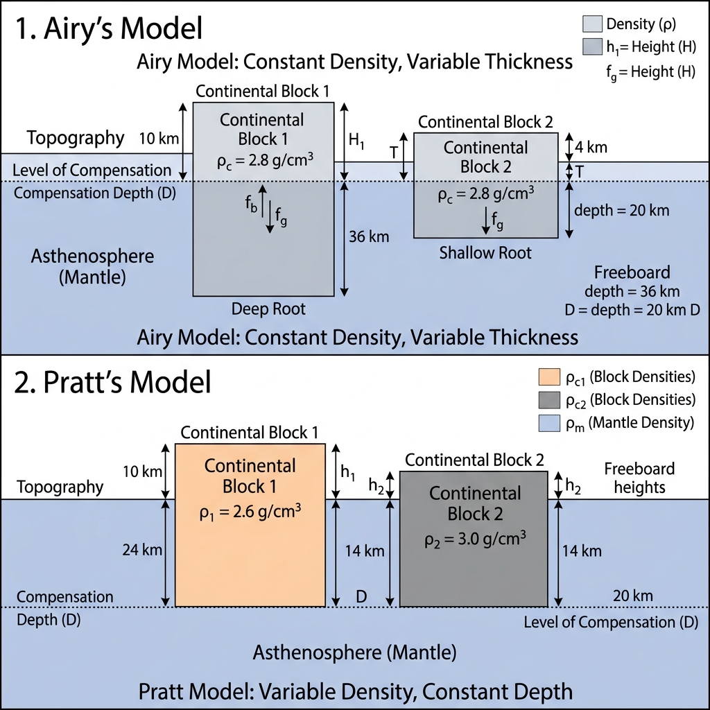

Geomorphology
Study of landforms, their processes, and the forces that shape Earth’s surface.
Welcome to the Geomorphology module of Geography OpenCourseWare. This course explores the origin, evolution, and classification of landforms across Earth’s surface.
Unit Overview: Fundamental Concepts
Fundamental Concepts
Understanding the basic principles governing landscape evolution provides the theoretical framework for geomorphology. The discipline attempts to decipher the historical sequences that have shaped the current surface of the Earth.

Get the Presentation ↗ | Watch the Video ↗
- Uniformitarianism: The principle that the same geological processes operating today have operated throughout Earth’s history (“the present is the key to the past”).
- Davisian Cycle of Erosion: The classic 19th-century model by W.M. Davis proposing that landscapes evolve through distinct stages: youth (steep V-shaped valleys), maturity (widened floodplains), and old age (peneplains with monadnocks).
- Penck’s Model: Walther Penck challenged Davis, arguing that landforms are a continuous response to the relative rates of tectonic uplift and denudation, emphasizing slope profiles over time.
- King’s Pediplanation Theory: L.C. King developed a model dominant in arid and semi-arid savanna regions, where landscape evolution is driven by scarp retreat, forming extensive pediments instead of peneplains.
Factors Controlling Landform Development
The development and evolution of landforms on Earth’s surface is determined by a complex interplay of internal and external forces. Understanding these controlling factors is central to geomorphological analysis.
1. Structure (Lithology & Geological Structure)
The rock type and its structural arrangement fundamentally control how landforms develop:
- Lithology: The physical and chemical characteristics of rock — hardness, mineral composition, porite, and solubility — determine how resistant it is to weathering and erosion. Granite, for instance, is highly resistant and produces rugged, mountainous terrain, while limestone is chemically soluble, giving rise to karst topography.
- Geological Structure: The arrangement of rock layers — their dip, strike, faults, and folds — governs drainage patterns, cliff orientations, and valley alignment. A cuesta landscape, for example, results from gently dipping resistant strata overlying weaker rocks.
- Joints and Fractures: Dense joint networks facilitate deep weathering and faster erosion, influencing features like tors (rounded granite masses on Dartmoor, UK).
2. Process (Geomorphic Agents)
The geomorphic agents — running water, wind, ice, waves, and gravity — actively shape the landscape:
- Running Water: The dominant agent globally, responsible for V-shaped valleys, gorges, flood plains, and deltas.
- Glaciers: Powerful erosive agents creating U-shaped valleys, cirques, and moraines in high-latitude and high-altitude regions.
- Wind: The primary agent in arid environments, sculpting yardangs, ventifacts, and sand dune fields.
- Waves & Currents: Dominant along coastlines, creating cliffs, beaches, spits, and barrier islands.
- Gravity: The underlying force behind all mass wasting processes — landslides, creep, and debris flows.
3. Time (Stage of Development)
Time determines the stage of landscape evolution:
- W.M. Davis introduced the concept that landscapes pass through stages of Youth (vigorous downcutting, steep relief), Maturity (balanced erosion, moderate relief), and Old Age (low relief, peneplain formation).
- Rejuvenation — caused by tectonic uplift or a fall in base level — can restart the cycle, producing features like knickpoints, incised meanders, and river terraces.
Structure, Process, and Time — these three factors form the foundational triad proposed by W.M. Davis (1899) to explain landform development. He summarised this as: “Landscape is a function of structure, process, and stage (time).”
4. Climate
Climate exerts a pervasive control over geomorphic processes:
- Humid Tropical Climates: Intense chemical weathering (deep laterite soils), dense drainage networks, and rapid mass wasting.
- Arid Climates: Mechanical weathering dominates; wind erosion and deposition produce desert pavements, mesas, and buttes.
- Periglacial Climates: Freeze-thaw cycles drive frost shattering, solifluction, and the creation of patterned ground.
- Climatic Geomorphology (pioneered by Julius Büdel) classifies Earth into distinct morphoclimatic zones, each with a characteristic suite of landforms.
5. Tectonic Activity
Active tectonics directly control relief and elevation:
- Uplift creates mountains and plateaus, increasing the available gradient for river erosion.
- Subsidence creates basins and depressions that accumulate sediments.
- Faulting produces horsts, grabens, rift valleys, and escarpments.
- In tectonically active zones (e.g., the Pacific Ring of Fire), volcanic and seismic processes dominate landform creation.
6. Human Activity (Anthropogeomorphology)
In the Anthropocene, human activity has become a major geomorphic agent:
- Deforestation accelerates soil erosion by orders of magnitude.
- Urbanisation alters drainage patterns, increases surface runoff, and causes flash flooding.
- Mining reshapes topography through excavation, subsidence, and waste heaps.
- Dam construction modifies river regimes, traps sediment, and causes downstream erosion.
[!TIP] UGC NET Focus: Questions frequently test Davis’s triad (Structure, Process, Time). Remember that Penck later added the concept of Aufsteigende Entwicklung (waxing development) and Absteigende Entwicklung (waning development), linking tectonic uplift rate directly to slope form.
Earth’s Interior & Crustal Evolution
Physical Conditions of the Earth’s Interior
Direct observation of the Earth’s interior is impossible beyond a few kilometres (the deepest borehole, Kola Superdeep, reached only ~12.3 km of Earth’s ~6,371 km radius). Our knowledge is derived primarily from seismology, along with evidence from meteorites, laboratory experiments, and geophysical modelling.
A. Evidence for Internal Structure
| Source | What It Tells Us |
|---|---|
| Seismic Waves | The primary source. P-waves and S-waves travel through the Earth at speeds dependent on density & elasticity; their refraction, reflection, and shadow zones reveal the layered structure. |
| Meteorites | Composition analogs: iron meteorites ≈ core composition; stony meteorites ≈ mantle/crust. |
| Density Calculation | Earth’s average density (~5.5 g/cm³) is much higher than surface rocks (~2.7 g/cm³), proving a dense core exists. |
| Magnetic Field | Requires a liquid, electrically conducting outer core (iron-nickel). |
| Moment of Inertia | The way Earth spins confirms mass concentration at the centre. |
| High-Pressure Experiments | Lab simulations replicate deep-Earth conditions to infer mineral behaviour. |
B. Seismic Wave Behaviour
Types of Seismic Waves
| Wave Type | Nature | Medium | Speed |
|---|---|---|---|
| P-waves (Primary) | Compressional (longitudinal) | Solids + Liquids + Gases | Fastest (~6–13 km/s) |
| S-waves (Secondary) | Shear (transverse) | Solids only | Slower (~3.5–7 km/s) |
| Surface waves (Love, Rayleigh) | Complex surface motion | Surface only | Slowest; most destructive |
Key Seismic Discontinuities
| Discontinuity | Depth | Significance |
|---|---|---|
| Conrad Discontinuity | ~15–20 km | Separates upper (granitic) and lower (basaltic) continental crust |
| Mohorovičić (Moho) | ~5–70 km | Marks the crust–mantle boundary. P-wave velocity jumps from ~6.5 to ~8 km/s. Discovered by Andrija Mohorovičić (1909). |
| Repetti Discontinuity | ~700 km | Transition within the mantle (upper to lower mantle) |
| Gutenberg Discontinuity | ~2,900 km | Marks the mantle–core boundary. S-waves are blocked (liquid outer core); P-waves slow dramatically. Discovered by Beno Gutenberg (1914). |
| Lehmann Discontinuity | ~5,150 km | Marks the outer core–inner core boundary. P-wave speeds increase again (solid inner core). Discovered by Inge Lehmann (1936). |
- P-wave shadow zone: 104°–140° from the epicentre. P-waves are refracted by the liquid outer core, creating a zone where no direct P-waves arrive.
- S-wave shadow zone: Beyond 104° from the epicentre. S-waves cannot pass through the liquid outer core at all — this proved the outer core is liquid.
C. Layered Structure of the Earth
1. Chemical Layers
| Layer | Depth | Composition | Density |
|---|---|---|---|
| Crust | 0–5/70 km | Silicates: SiAl (continental), SiMa (oceanic) | 2.7–3.0 g/cm³ |
| Mantle | 5/70–2,900 km | Iron-magnesium silicates (olivine, pyroxene, garnet) | 3.3–5.5 g/cm³ |
| Core | 2,900–6,371 km | Iron-nickel alloy (NiFe) | 10–13 g/cm³ |
2. Mechanical (Rheological) Layers
| Layer | Depth | Behaviour |
|---|---|---|
| Lithosphere | 0–100 km | Rigid, brittle; includes crust + uppermost mantle. Divided into tectonic plates. |
| Asthenosphere | 100–300 km | Partially molten, ductile; the “weak layer” on which lithospheric plates float and move. |
| Mesosphere (Lower Mantle) | 300–2,900 km | Solid but flows very slowly under sustained stress (geological time). Increasing pressure keeps material solid despite high temperature. |
| Outer Core | 2,900–5,150 km | Liquid iron-nickel. Generates Earth’s magnetic field through convection (geodynamo). Temperature: ~4,000–5,000°C. |
| Inner Core | 5,150–6,371 km | Solid iron-nickel (despite temps ~5,000–6,000°C, immense pressure prevents melting). Slowly growing as outer core cools and crystallises. |
D. Temperature, Pressure, and Density with Depth
| Property | Trend with Depth |
|---|---|
| Temperature | Increases at ~25–30°C per km near the surface (geothermal gradient); rate decreases in the mantle; core temperatures reach ~5,000–6,000°C. |
| Pressure | Increases linearly with depth due to accumulated weight of overlying rock. Reaches ~360 GPa at the centre. |
| Density | Increases from ~2.7 g/cm³ at the surface to ~13 g/cm³ at the inner core. |
E. Sources of Internal Heat
- Radiogenic Heat: Decay of radioactive isotopes (uranium-238, thorium-232, potassium-40) in the crust and mantle — the dominant ongoing heat source.
- Primordial Heat: Residual heat from Earth’s accretion and differentiation ~4.6 Ga ago.
- Latent Heat: Released as the liquid outer core crystallises onto the growing inner core.
- Tidal Heating: Minor contribution from gravitational interaction with the Moon.
[!TIP] UGC NET Focus: Memorise the three major discontinuities (Moho, Gutenberg, Lehmann) and their depths. Know the S-wave shadow zone as proof of the liquid outer core. Distinguish between chemical layers (crust–mantle–core) and mechanical layers (lithosphere–asthenosphere).
Origin and Evolution of the Earth’s Crust
Understanding how the Earth’s crust formed and evolved over 4.6 billion years is fundamental to geomorphology. The crust is the outermost solid layer of the Earth and the surface upon which all landforms develop.
A. Origin of the Earth
Nebular Hypothesis (Modern Version — Solar Nebula Theory)
The most widely accepted model for Earth’s formation:
- ~4.6 billion years ago: A rotating cloud of interstellar gas and dust (solar nebula) began contracting under gravity.
- Proto-Sun formed at the centre; the remaining material flattened into a protoplanetary disc.
- Accretion: Dust particles collided and stuck together, forming planetesimals (km-sized bodies), then protoplanets, and eventually the terrestrial planets (Mercury, Venus, Earth, Mars).
- Differentiation: The early Earth was largely molten. Heavy elements (iron, nickel) sank to form the core, while lighter silicates rose to form the mantle and crust — a process called planetary differentiation.
B. Evolution of the Earth’s Crust
1. The Hadean Eon (4.6–4.0 Ga)
- Earth’s surface was initially a magma ocean due to heat from accretion, radioactive decay, and the Moon-forming giant impact (~4.5 Ga).
- As the surface cooled, a thin primary crust of ultramafic composition (komatiite) solidified.
- The earliest water vapour condensed to form the primordial oceans (~4.4 Ga, based on zircon evidence from Jack Hills, Australia).
- Intense meteorite bombardment (Late Heavy Bombardment, ~4.1–3.8 Ga) continuously resurfaced the early crust.
2. The Archaean Eon (4.0–2.5 Ga)
- The first stable continental crust began to form — granite-gneiss complexes and greenstone belts.
- Greenstone belts: Sequences of volcanic and sedimentary rocks (basalts, komatiites, cherts) representing ancient oceanic crust and volcanic arcs.
- Granite-gneiss terrains: The earliest continental nuclei (protocontinents or cratons).
- Whether plate tectonics operated in the Archaean is debated; some evidence suggests a form of “drip tectonics” or sagduction (sinking of dense lithosphere).
3. The Proterozoic Eon (2.5–0.54 Ga)
- Continental crust grew significantly through crustal accretion and orogenic events.
- Supercontinents assembled and broke apart:
- Columbia/Nuna (~1.8–1.5 Ga)
- Rodinia (~1.1–0.75 Ga)
- The Great Oxidation Event (~2.4 Ga) transformed the atmosphere and surface chemistry, enabling widespread red bed (iron oxide) deposition.
- Snowball Earth glaciations (~720–635 Ma) covered much or all of the planet in ice.
4. The Phanerozoic Eon (540 Ma – Present)
- The familiar pattern of plate tectonics, orogenies, and supercontinent cycles dominated.
- Pangaea assembled (~335–175 Ma), then fragmented to produce the present continents.
- Major orogenic events: Caledonian, Hercynian/Variscan, Alpine-Himalayan.
C. Types of Earth’s Crust
| Feature | Continental Crust | Oceanic Crust |
|---|---|---|
| Composition | Silicic (granitic) — SiAl (Silicon + Aluminium) | Basic (basaltic) — SiMa (Silicon + Magnesium) |
| Average Density | ~2.7 g/cm³ | ~3.0 g/cm³ |
| Thickness | 30–70 km (thickest under mountains) | 5–10 km |
| Age | Up to 4.0 Ga (very old) | <200 Ma (continuously recycled at subduction zones) |
| Behaviour | Too buoyant to subduct — permanent | Subducted and destroyed at convergent boundaries |
D. Crustal Growth and Recycling
- Volcanic Addition: Magma rises at mid-ocean ridges (creating oceanic crust) and at volcanic arcs (adding to continental crust).
- Accretionary Tectonics: Island arcs, oceanic plateaus, and seamounts are accreted onto continental margins during subduction.
- Underplating: Magma crystallises at the base of the crust, thickening it from below.
- Intra-plate Volcanism: Hotspot volcanoes (e.g., Hawaii, Réunion) add material to both oceanic and continental crust.
How the Crust is Recycled
- Subduction: Oceanic crust is consumed at convergent boundaries and reabsorbed into the mantle.
- Erosion & Sedimentation: Continental crust is eroded, transported, deposited in basins, and eventually may be subducted.
- Delamination: Dense lower crust or lithospheric mantle detaches and sinks into the asthenosphere.
E. Indian Context
- The Indian Shield (Peninsular India) consists of Archaean cratons — Dharwar, Singhbhum, Bastar, and Bundelkhand Cratons — among the oldest crustal fragments on Earth (3.0–3.5 Ga).
- These cratons are welded together by Proterozoic mobile belts (Eastern Ghats, Satpura, Aravalli).
- The Deccan Traps (~66 Ma) represent one of the largest volcanic events in Earth’s history — basaltic lava covering ~500,000 km² up to 2 km thick — linked to the Réunion hotspot.
[!TIP] UGC NET Focus: Know the difference between SiAl and SiMa, continental vs. oceanic crust properties, and the concept of cratons (Indian Shield cratons are frequently asked). The supercontinental cycle (Rodinia → Pangaea → present) is also important.
Fundamentals of Geomagnetism
Geomagnetism is the study of Earth’s magnetic field — its origin, structure, variations, and applications in Earth sciences. The geomagnetic field provides critical evidence for plate tectonics, aids in navigation, and shields the planet from harmful solar radiation.
A. Earth’s Magnetic Field
The Earth behaves approximately as a giant magnetic dipole (bar magnet), with magnetic field lines emerging from the South Magnetic Pole and converging at the North Magnetic Pole.
Key Elements
| Element | Description |
|---|---|
| Magnetic Declination | The angle between geographic north (true north) and magnetic north at any location. Varies with location and time. |
| Magnetic Inclination (Dip) | The angle between the magnetic field lines and the horizontal plane. 0° at the magnetic equator, 90° at the magnetic poles. |
| Magnetic Intensity | The strength of the magnetic field at a point, measured in nanotesla (nT). Total Earth field averages ~25,000–65,000 nT. |
| Magnetic Equator | The line where inclination is zero (field lines are horizontal). Does not coincide with the geographic equator. |
Magnetic Poles vs. Geographic Poles
- The magnetic poles are not fixed and do not coincide with the geographic poles.
- The North Magnetic Pole is currently in the Canadian Arctic (~86°N) and is drifting toward Siberia at ~40–50 km/year.
- The angle between the magnetic and rotational axes is called the axial tilt (currently ~11°).
B. Origin of the Geomagnetic Field — The Dynamo Theory
The most widely accepted explanation is the geodynamo theory:
- Earth’s outer core is composed of liquid iron-nickel alloy at temperatures of 4,000–6,000°C.
- Convection currents in the liquid outer core (driven by heat from the inner core and radioactive decay) create organised flow patterns.
- The flow of electrically conducting liquid iron generates electric currents, which in turn produce magnetic fields (Faraday’s law of electromagnetic induction).
- Earth’s rotation (Coriolis effect) organises these currents into a predominantly dipolar field.
- The system is self-sustaining — the generated magnetic field reinforces the currents (positive feedback).
This theory was developed by Walter Elsasser and Edward Bullard in the 1940s–50s.
C. Secular Variations
The geomagnetic field is not static — it changes over time at multiple scales:
| Time Scale | Variation | Cause |
|---|---|---|
| Seconds to Hours | Magnetic storms, micropulsations | Solar wind interactions with magnetosphere |
| Years to Centuries | Secular variation (gradual drift of declination, dip) | Changes in outer core convection patterns |
| Thousands to Millions of Years | Geomagnetic reversals (polarity flips) | Fundamental reorganisation of core dynamo |
D. Palaeomagnetism and Geomagnetic Reversals
Palaeomagnetism is the study of the record of Earth’s past magnetic field preserved in rocks:
- When iron-bearing minerals (especially magnetite) crystallise from magma or settle in sediments, they align with the ambient magnetic field and become permanently magnetised (remanent magnetisation).
- This “fossil magnetism” records the direction and intensity of the field at the time of rock formation.
Geomagnetic Polarity Reversals
- The Earth’s magnetic field has reversed polarity hundreds of times throughout geological history.
- Normal polarity: Magnetic north near geographic north (present configuration).
- Reversed polarity: Magnetic north near geographic south.
- Reversals occur irregularly, every few hundred thousand to a few million years.
- The current normal polarity epoch is called the Brunhes Normal Epoch (began ~780,000 years ago).
Geomagnetic Polarity Time Scale (GPTS)
| Epoch | Age (Ma) | Polarity |
|---|---|---|
| Brunhes | 0 – 0.78 | Normal |
| Matuyama | 0.78 – 2.58 | Reversed (with brief normal events) |
| Gauss | 2.58 – 3.58 | Normal |
| Gilbert | 3.58 – 5.89 | Reversed |
E. Applications in Geomorphology and Geology
- Proof of Seafloor Spreading: Symmetric zebra-stripe patterns of magnetic anomalies on either side of mid-ocean ridges (Vine-Matthews-Morley hypothesis, 1963) confirmed Hess’s seafloor spreading model, becoming a cornerstone of plate tectonics.
- Reconstructing Continental Positions: Apparent Polar Wander Paths (APWPs) from different continents can only be reconciled if the continents have moved — supporting continental drift.
- Dating Rocks and Sediments: Magnetic polarity reversals in rock sequences can be correlated with the GPTS to provide chronological control.
- Mineral Exploration: Magnetic surveys detect variations in Earth’s magnetic field caused by magnetite-rich ore bodies.
- Archaeology: Archaeomagnetism dates fired structures (kilns, hearths) by comparing their remanent magnetisation to the known secular variation curve.
[!TIP] UGC NET Focus: Key topics include the dynamo theory, magnetic declination vs. inclination, palaeomagnetism as evidence for continental drift and seafloor spreading (Vine-Matthews hypothesis), and the geomagnetic polarity time scale (Brunhes, Matuyama, Gauss, Gilbert epochs).
Isostasy: The State of Crustal Balance
Isostasy (Greek isos = equal, stasis = standing) is the state of gravitational equilibrium between Earth’s crust and mantle, such that the crust “floats” at an elevation based on its thickness and density. This concept explains how different topographic heights (mountains vs. basins) can exist in a stable state.

1. Airy’s Hypothesis (Floating Iceberg Analogy)
Proposed by Sir George Airy, this model assumes that the Earth’s crust is composed of blocks of uniform density but varying thickness. - Mechanism: Like an iceberg, taller mountains have deeper “roots” extending into the denser mantle. - Key Principle: “The bigger the mountain, the deeper the root.” - Application: Explains why the Himalayas have a massive crustal root (~70km) compared to the oceanic crust (~5-10km).
2. Pratt’s Hypothesis (Varying Density Analogy)
Proposed by John Henry Pratt, this model assumes that the blocks of the crust have varying densities but extend to a uniform depth called the Level of Compensation. - Mechanism: Taller landforms (mountains) are made of lighter (less dense) material, while lower-lying areas (basins) are made of denser material. - Key Principle: “Uniform depth, varying density.” - Application: Used to explain density variations across different continental segments.
Comparison Table
| Feature | Airy’s Model | Pratt’s Model |
|---|---|---|
| Density | Uniform across all blocks | Varies (Inversely with height) |
| Depth of Root | Varies (Proportional to height) | Uniform (Level of Compensation) |
| Analogy | Icebergs in water | Copper/Iron/Lead blocks in Mercury |
| Main Contribution | Concept of crustal roots | Concept of compensation level |
[!TIP] UGC NET Focus: Questions often ask to distinguish between the “Uniform Density, Varying Depth” (Airy) and “Varying Density, Uniform Depth” (Pratt) principles. Remember: Airy = Roots, Pratt = Density.
Tectonics & Mountain Building
Continental Drift and Plate Tectonics
These two theories — separated by four decades — represent the most transformative ideas in Earth sciences. Together they explain the distribution of continents, ocean basins, mountain belts, earthquakes, and volcanoes.
A. Continental Drift Theory (Alfred Wegener, 1912)
The Hypothesis
Alfred Wegener proposed that all present-day continents were once joined in a single supercontinent called Pangaea (Greek: “all land”), surrounded by a universal ocean called Panthalassa. Pangaea began to break apart around 200 million years ago, and the fragments drifted to their present positions.
Evidences for Continental Drift
| Category | Evidence |
|---|---|
| Jigsaw Fit | The coastlines of South America and Africa fit together remarkably well, especially along the continental shelf at the 500-fathom line (Bullard’s computer fit, 1965). |
| Geological | Identical rock types, mountain chains, and structural trends match across oceans. The Appalachian Mountains (North America) continue as the Caledonian Mountains (Scotland–Scandinavia). |
| Palaeontological | Fossils of Mesosaurus (freshwater reptile) found in both Brazil and South Africa. Glossopteris flora found in India, Australia, South America, and Antarctica. |
| Palaeoclimatic | Permo-Carboniferous glacial deposits (tillites) found in India, South America, Africa, and Australia — regions now tropical. This makes sense only if these landmasses were once near the South Pole as part of Gondwana. |
| Geodetic | Wegener cited preliminary geodetic measurements suggesting Greenland was drifting westward (later confirmed imprecise, but the concept was correct). |
Criticism and Limitations
- Wegener proposed “Polflucht” (flight from poles) and tidal forces as the driving mechanism — both were shown to be far too weak to move continents.
- Without a credible mechanism, the theory was rejected by most geologists until the 1960s.
B. Plate Tectonics (1960s Revolution)
Plate tectonics synthesised continental drift, seafloor spreading, and new geophysical data into a comprehensive theory of how the Earth works.
Key Precursor Discoveries
- Seafloor Spreading (Harry Hess, 1962): New oceanic crust is continuously generated at mid-ocean ridges, spreads laterally, and is destroyed at subduction zones. The ocean floor acts as a conveyor belt.
- Magnetic Anomalies (Vine & Matthews, 1963): Symmetric zebra-stripe patterns of magnetic reversals on either side of mid-ocean ridges confirmed seafloor spreading.
- Wadati-Benioff Zones: Inclined planes of earthquake foci descending beneath island arcs proved that oceanic plates are being subducted into the mantle.
Core Principles
- The lithosphere (crust + upper rigid mantle) is divided into ~15 major and several minor tectonic plates.
- These plates float on the asthenosphere — a weak, partially molten zone (~100–300 km depth).
- Plates are in constant, slow motion (1–15 cm/year), driven by mantle convection, ridge push, and slab pull.
- All major geological activity — earthquakes, volcanism, mountain building — is concentrated at plate boundaries.
Types of Plate Boundaries
| Boundary Type | Motion | Features | Examples |
|---|---|---|---|
| Divergent | Plates move apart | Mid-ocean ridges, rift valleys, basaltic volcanism | Mid-Atlantic Ridge, East African Rift |
| Convergent | Plates move together | Subduction zones, mountain belts, volcanic arcs, deep trenches | Himalayas, Andes, Mariana Trench |
| Transform | Plates slide past each other | Strike-slip faults, earthquakes, no volcanism | San Andreas Fault, Dead Sea Transform |
Major Tectonic Plates
- Pacific Plate, North American Plate, South American Plate, Eurasian Plate, African Plate, Indo-Australian Plate, Antarctic Plate.
- Minor plates: Philippine, Cocos, Nazca, Caribbean, Arabian, Juan de Fuca, Scotia, and others.
Driving Forces of Plate Motion
- Mantle Convection: Thermal convection in the mantle creates drag on the base of plates (Holmes’ original idea, confirmed and refined).
- Ridge Push: Elevated mid-ocean ridges exert a gravitational push on the plates away from the ridge axis.
- Slab Pull: Dense, cold subducting slabs sink into the mantle, pulling the rest of the plate behind them. This is considered the dominant driving force.
C. Wilson Cycle
J. Tuzo Wilson described the cyclical opening and closing of ocean basins:
- Embryonic: Continental rifting begins (East African Rift).
- Young: Narrow sea forms (Red Sea).
- Mature: Wide ocean with mid-ocean ridge (Atlantic Ocean).
- Declining: Subduction begins, ocean shrinks (Pacific Ocean).
- Terminal: Ocean closes, continents collide (Mediterranean Sea).
- Suture: Complete closure; mountain belt marks the join (Himalayas — Indus-Tsangpo Suture Zone).
[!TIP] UGC NET Focus: Frequently tested topics include Wegener’s evidences (especially Glossopteris, Mesosaurus, and jigsaw fit), the difference between ridge push and slab pull, and the Wilson Cycle. Know all three types of plate boundaries with named examples.
Geosynclines
The geosyncline concept was one of the earliest attempts to explain mountain building (orogeny) and was a dominant theory in geology from the mid-19th century until the plate tectonic revolution in the 1960s.
Definition
A geosyncline is a large, elongated trough or basin in the Earth’s crust that subsides over long geological periods, accumulating vast thicknesses of sedimentary and volcanic deposits — often exceeding 10,000–15,000 metres. Eventually, these sediments are compressed, folded, uplifted, and metamorphosed to form fold mountain chains.
Historical Development
| Scholar | Contribution |
|---|---|
| James Hall (1859) | Observed that Appalachian sedimentary strata were far thicker than equivalent strata on the stable interior platform. He proposed the concept of a subsiding trough (protogeosyncline). |
| James D. Dana (1873) | Coined the term “geosyncline” and proposed that lateral compression from cooling and contraction of the Earth caused the trough to fold and rise. |
| Émile Haug (1900) | Distinguished between geosynclines (unstable, mobile zones between continents) and continental platforms (stable, rigid areas). He noted geosynclines coincided with ancient seas. |
| Hans Stille (1936) | Introduced the classification of orthogeosynclines (major mobile belts) and parageosynclines (intracratonic troughs). |
| Marshall Kay (1951) | Refined the classification further into multiple sub-types based on volcanic activity and tectonic setting. |
Classification of Geosynclines
- Orthogeosynclines — Major mountain-building troughs along continental margins:
- Eugeosyncline: The outer, ocean-ward part with thick volcanic rocks (basalt flows, pillow lavas) and greywacke sediments. High tectonic and volcanic activity.
- Miogeosyncline: The inner, continent-ward part with shallow-water sedimentary rocks — limestones, sandstones, and shales. Low volcanic activity.
- Parageosynclines — Intra-continental basins within stable cratons:
- Autogeosyncline: Subsiding basins on continental interiors (e.g., Michigan Basin).
- Exogeosyncline: Linear troughs adjacent to orogenic belts, filled by erosional debris from rising mountains (foredeep basins).
The Geosyncline Cycle (Classical View)
The classical geosyncline theory proposed a cyclical process:
- Subsidence & Sedimentation: A long trough forms along a continental margin, subsides, and accumulates kilometres of sediment over hundreds of millions of years.
- Compression & Folding: The trough is subjected to lateral compressive forces. Sediments are intensely folded, faulted, and metamorphosed.
- Uplift & Orogeny: The compressed sediments are uplifted above sea level, forming a fold mountain chain (e.g., Appalachians, Alps, Himalayas).
- Denudation: The newly formed mountains are attacked by weathering and erosion.
Modern Re-evaluation with Plate Tectonics
With the advent of plate tectonics in the 1960s, the geosyncline concept was largely reinterpreted:
- The eugeosyncline corresponds to an oceanic trench and island arc system at a convergent plate boundary.
- The miogeosyncline corresponds to a passive continental margin (continental shelf and slope).
- The exogeosyncline corresponds to a foreland basin (e.g., the Indo-Gangetic Plain in front of the rising Himalayas).
- Sediment accumulation, volcanic activity, and eventual orogeny are now explained by subduction, collision, and accretion processes.
While the term “geosyncline” is largely replaced in modern geology by plate tectonic terminology, it remains historically significant and frequently appears in UGC NET and competitive geography examinations.
[!TIP] UGC NET Focus: Questions typically ask about Hall vs. Dana’s contributions, the distinction between eugeosyncline and miogeosyncline, and how plate tectonics reinterpreted the geosyncline concept.
Recent Views on Mountain Building (Orogeny)
Mountain building — orogeny — is one of the most dramatic expressions of Earth’s internal dynamics. Our understanding has evolved significantly from classical contraction theory to modern plate tectonic models.
A. Classical Theories of Mountain Building
1. Contraction Theory (Élie de Beaumont, 1829)
- Earth was originally molten and has been cooling and contracting since formation.
- As the interior shrinks, the rigid crust wrinkles and crumples — much like the skin of a drying apple.
- Limitation: Radioactive heat generation means Earth is not simply cooling; contraction alone cannot account for the magnitude and pattern of mountain belts.
2. Convection Current Theory (Arthur Holmes, 1931)
- Thermal convection currents in the semi-plastic mantle drag crustal plates along.
- Ascending currents cause rifting; descending currents cause compression and mountain building.
- Holmes’ model was remarkably prescient and became a cornerstone of plate tectonic theory.
3. Geosyncline Theory (Hall & Dana)
- Mountains form from the compression and uplift of thick sedimentary sequences accumulated in geosynclines (see Topic 04).
- Reinterpreted in the plate tectonic framework as sedimentary wedges at convergent margins.
B. Modern Plate Tectonic View of Orogeny
The plate tectonic revolution (1960s) provided a unified mechanism for mountain building based on the interaction of lithospheric plates:
1. Continental-Continental Collision (Collision Orogeny)
- When two continental plates converge (both too buoyant to subduct), the intervening oceanic crust is consumed, and the continents collide.
- Produces the highest and most extensive mountain ranges on Earth.
- Example: The Himalayas — formed by the ongoing collision of the Indo-Australian plate with the Eurasian plate, beginning ~50 Ma. The Tethys Sea sediments were compressed into the Greater and Lesser Himalayan sequences.
- Characteristics: Intense folding and thrust faulting, regional metamorphism, crustal thickening up to 70 km, and continued seismic activity.
2. Oceanic-Continental Convergence (Andean-type Orogeny)
- Dense oceanic crust subducts beneath lighter continental crust.
- The subduction zone generates volcanism, folding, and the formation of a marginal mountain belt along the continental edge.
- Example: The Andes — the longest continental mountain chain, formed by the subduction of the Nazca plate beneath the South American plate.
- Characteristics: Volcanic arc, deep oceanic trench (Peru–Chile Trench), accretionary wedge, and back-arc foreland basin.
3. Oceanic-Oceanic Convergence (Island Arc Orogeny)
- When two oceanic plates converge, the older/denser plate subducts, triggering volcanic eruptions on the overriding plate.
- Produces volcanic island arcs and associated mountain chains.
- Example: The Japanese Islands, the Mariana Arc, and the Indonesian Archipelago.
- Characteristics: Curved island chain, deep trench, intense volcanism, and frequent earthquakes.
4. Accretionary Orogeny (Terrane Accretion)
- Small crustal fragments — terranes (island arcs, seamounts, oceanic plateaus, microcontinents) — are accreted to a continental margin during subduction.
- Example: Western North America (from Alaska to California) is a collage of accreted terranes added over hundreds of millions of years.
C. Key Modern Concepts
- Crustal Shortening & Thickening: Compression causes the crust to shorten horizontally and thicken vertically. The Himalayas have doubled crustal thickness from ~35 km to ~70 km.
- Isostatic Adjustment: As mountains rise, their deep crustal roots maintain gravitational equilibrium (Airy’s model). Erosion of the surface causes isostatic uplift of the root.
- Extrusion Tectonics: In collision zones, continental blocks can be “squeezed out” laterally. Southeast Asia was extruded eastward as India pushed into Eurasia.
- Orogenic Collapse: Overthickened crust may gravitationally collapse and spread, forming extensional basins even within a compressional setting (e.g., Tibetan Plateau).
- Mantle Delamination: The lower lithospheric mantle may detach and sink, causing rapid surface uplift and volcanism (proposed for the Altiplano in the Andes).
D. Indian Example: The Himalayan Orogeny
| Phase | Age | Event |
|---|---|---|
| Phase 1 | ~225 Ma | Indian plate separates from Gondwana |
| Phase 2 | ~80 Ma | Rapid northward drift (~15 cm/year) towards Eurasia |
| Phase 3 | ~50 Ma | Initial contact with Eurasian plate; closure of the Tethys Sea |
| Phase 4 | ~20 Ma | Main Himalayan orogeny; intense folding, thrust faulting |
| Phase 5 | Present | Continued convergence at ~5 cm/year; Himalayas still rising ~5 mm/year |
[!TIP] UGC NET Focus: Distinguish between collision orogeny (Himalayan type) and subduction orogeny (Andean type). Also know Holmes’ convection current model as a precursor to plate tectonics.
Geomorphic Processes (Endogenic & Exogenic)
Endogenic Processes
Endogenic forces originate deep within the Earth’s mantle and crust. They are primarily constructive forces driven by the planet’s internal radiogenic heat, establishing the broad structural framework of the continents and ocean basins.

Get the Presentation ↗ | Watch the Video ↗
- Plate Tectonics & Continental Drift: The foundational theory that Earth’s lithosphere is divided into rigid plates floating on the asthenosphere. Divergent boundaries create rift valleys and ocean ridges; convergent boundaries build immense mountain chains like the Himalayas; transform boundaries cause strike-slip faulting.
- Volcanism: The extrusion of magma onto the surface. Eruption styles (effusive vs. explosive) determine landforms such as broad shield volcanoes (Hawaii), steep stratovolcanoes (Mt. Fuji), extensive basalt plateaus (Deccan Traps), and collapsed calderas.
- Folding & Faulting: Crustal deformation under compressive stress creates folds (upward anticlines and downward synclines). Tensional stress creates faults, leading to block mountains (horsts) and rift valleys (grabens).
- Earthquakes: Sudden releases of seismic energy due to tectonic locking and rupture along fault lines. Besides ground shaking, they can trigger tsunamis, liquefaction, and massive landslides.
Volcanicity
Volcanicity (or volcanism) encompasses all phenomena associated with the movement of magma from the Earth’s interior to the surface and its related effects. Volcanic activity is one of the most powerful endogenic processes, building new crust, reshaping landscapes, and influencing climate.
A. Types of Volcanic Activity
1. Extrusive (Surface) Volcanism
Magma reaches the surface as lava, along with pyroclastic materials (ash, bombs, tephra):
- Central-vent Eruptions: Magma erupts from a central conduit, building a volcanic cone.
- Fissure Eruptions: Magma pours out along elongated fractures (fissures), producing extensive lava plateaus rather than cones.
2. Intrusive (Subsurface) Volcanism
Magma solidifies within the crust without reaching the surface:
| Intrusive Form | Description |
|---|---|
| Batholith | Massive, deep-seated igneous body (>100 km²) — the roots of mountain chains. Made of granite. Examples: Sierra Nevada batholith, Himalayan batholiths. |
| Laccolith | Mushroom-shaped or dome-shaped intrusion that pushes overlying strata upward. |
| Lopolith | Saucer-shaped intrusion, concave upward. |
| Phacolith | Lens-shaped intrusion occupying the crests of anticlines or troughs of synclines. |
| Sill | Horizontal, sheet-like intrusion along bedding planes (concordant). Example: Great Whin Sill, northern England. |
| Dyke | Vertical or near-vertical sheet-like intrusion cutting across bedding planes (discordant). |
B. Types of Volcanic Eruptions
| Type | Characteristics | Example |
|---|---|---|
| Hawaiian | Gentle effusive eruption; highly fluid basaltic lava; lava fountains; builds broad, gentle shield volcanoes | Kilauea, Hawaii |
| Strombolian | Moderate explosive bursts; incandescent fragments ejected; rhythmic eruptions | Stromboli, Italy |
| Vulcanian | More violent; viscous lava; dense ash clouds; cannon-like blasts | Vulcano, Italy |
| Plinian | Extremely violent; massive eruption column reaching the stratosphere; pyroclastic flows; catastrophic | Mt. Vesuvius (79 AD), Mt. Pinatubo (1991) |
| Pelean | Extremely viscous lava forms domes; glowing avalanches (nuées ardentes / pyroclastic flows) | Mt. Pelée, Martinique (1902) |
C. Types of Volcanoes (Landforms)
| Volcano Type | Shape | Eruption Style | Composition | Example |
|---|---|---|---|---|
| Shield Volcano | Broad, gently sloping dome | Effusive (quiet) | Basaltic (low viscosity) | Mauna Loa, Hawaii |
| Stratovolcano (Composite) | Steep, cone-shaped | Alternating explosive & effusive | Andesitic | Mt. Fuji, Mt. Rainier |
| Cinder Cone | Small, steep, symmetrical | Short explosive bursts | Basaltic–andesitic fragments | Parícutin, Mexico |
| Caldera | Large depression (>1 km) formed by collapse after massive eruption or magma withdrawal | Catastrophic Plinian | Variable | Yellowstone, Crater Lake |
| Lava Plateau | Flat, extensive basalt plains | Fissure eruptions | Basaltic (flood basalts) | Deccan Traps, Columbia Plateau |
D. Volcanic Products
- Lava Flows: Basaltic (pahoehoe — ropy; aa — rough, blocky) or silicic (obsidian — volcanic glass; pumice — highly vesicular).
- Pyroclastic Material: Ash (<2 mm), lapilli (2–64 mm), bombs (>64 mm), and ignimbrites (welded tuff from pyroclastic flows).
- Volcanic Gases: Water vapour (H₂O, ~60–90%), CO₂, SO₂, H₂S, HCl, HF. These influence atmospheric composition and climate.
- Lahars: Destructive volcanic mudflows formed when pyroclastic material mixes with water.
E. Distribution of Volcanoes
About 1,500 potentially active volcanoes exist on Earth (excluding mid-ocean ridges):
- Circum-Pacific Ring of Fire: ~75% of all active volcanoes. Subduction zones around the Pacific — Andes, Cascades, Japan, Philippines, Indonesia.
- Mid-Ocean Ridges: The largest volcanic system on Earth (~65,000 km long). Mainly submarine; Iceland is a notable above-water exception.
- Intraplate Hotspots: Volcanoes within plates, above deep mantle plumes — Hawaii, Réunion, Yellowstone, Iceland (also on ridge).
- East African Rift: Continental rift volcanism — Mt. Kilimanjaro, Mt. Kenya, Ol Doinyo Lengai.
F. Volcanic Hazards and Benefits
Hazards
- Lava flows, pyroclastic flows, lahars, tephra fall
- Volcanic gases (toxic, suffocating)
- Tsunami (volcanic collapse or explosion, e.g., Krakatoa 1883, Hunga Tonga 2022)
- Climate impact: Major eruptions inject SO₂ into the stratosphere → sulfate aerosols → global cooling (“volcanic winter”). Example: Mt. Pinatubo (1991) cooled global temperatures by ~0.5°C for 2 years.
Benefits
- Fertile volcanic soils (andisols) support intensive agriculture (e.g., Java, Guatemala, Italy).
- Geothermal energy (Iceland, New Zealand, Philippines, Kenya).
- Mineral deposits — many precious metal deposits (gold, copper, zinc) are associated with volcanic hydrothermal systems.
- Landform creation — volcanic islands, plateaus, and scenic landscapes (tourism).
G. Indian Volcanic Features
- Deccan Traps: One of the largest flood basalt provinces on Earth (~66 Ma). Erupted from fissures, covering ~500,000 km². Linked to the Réunion hotspot and possibly the K-Pg mass extinction.
- Barren Island (Andaman Sea): India’s only active volcano, with recent eruptions in 2017–18.
- Narcondam Island: A dormant volcanic island near Barren Island.
[!TIP] UGC NET Focus: Know the types of volcanoes (shield vs. composite vs. cinder), eruption types (Hawaiian to Plinian), intrusive forms (batholith, sill, dyke, laccolith), and global distribution (Ring of Fire). Deccan Traps and Barren Island are important Indian examples.
Earthquakes and Tsunamis
Earthquakes and tsunamis are among the most devastating natural hazards. Understanding their causes, mechanisms, and geomorphic effects is essential for both academic study and disaster risk reduction.
A. Earthquakes
Definition
An earthquake is a sudden release of energy in the Earth’s crust or upper mantle, generating seismic waves that cause ground shaking. Most earthquakes are caused by the rupture of rocks along faults due to tectonic stress accumulation.
Terminology
| Term | Definition |
|---|---|
| Focus (Hypocentre) | The point within the Earth where the rupture initiates. |
| Epicentre | The point on the surface directly above the focus. |
| Focal Depth | Distance from surface to focus: Shallow (<70 km), Intermediate (70–300 km), Deep (300–700 km). |
| Seismic Waves | Body waves (Primary P-waves, Secondary S-waves) and Surface waves (Love waves, Rayleigh waves). |
| Fault Plane | The surface along which rupture and displacement occur. |
Causes of Earthquakes
- Tectonic Earthquakes (most common): Caused by sudden slip along faults at plate boundaries. Energy accumulated by tectonic stress is released abruptly — the Elastic Rebound Theory (H.F. Reid, 1911).
- Volcanic Earthquakes: Associated with magma movement and volcanic eruptions.
- Collapse Earthquakes: Caused by the collapse of underground caves or mines.
- Reservoir-Induced Seismicity: Earthquakes triggered by the weight of water in large reservoirs (e.g., Koyna earthquake, Maharashtra, 1967).
- Human-Induced: Fracking, underground nuclear tests, and deep mining.
Measurement
- Magnitude (energy released):
- Richter Scale: Logarithmic scale based on amplitude of seismic waves (each whole number = ~32× more energy).
- Moment Magnitude Scale (Mw): The modern standard, based on seismic moment (fault area × displacement × rigidity).
- Intensity (effects on surface):
- Modified Mercalli Intensity (MMI) Scale: I (not felt) to XII (total destruction). Based on observed damage and human perception.
Distribution of Earthquakes
- Circum-Pacific Belt (Ring of Fire): ~80% of all earthquakes. Runs along the subduction zones bordering the Pacific Ocean.
- Alpine–Himalayan Belt (Mediterranean–Trans-Asiatic Belt): ~15% of earthquakes. Extends from the Mediterranean through Turkey, Iran, and the Himalayas to Myanmar.
- Mid-Ocean Ridge Belt: Shallow earthquakes associated with divergent plate boundaries and transform faults.
Effects of Earthquakes
- Ground shaking and surface rupture
- Liquefaction (saturated sediments behave like fluid)
- Landslides and rockfalls
- Fires (ruptured gas lines)
- Tsunamis (if submarine)
- Uplift or subsidence of land
Major Earthquakes in India
| Year | Earthquake | Magnitude | Key Impact |
|---|---|---|---|
| 1897 | Assam Earthquake | 8.1 | One of the strongest recorded; extensive destruction |
| 1905 | Kangra Earthquake | 7.8 | ~20,000 deaths in Himachal Pradesh |
| 1934 | Bihar–Nepal Earthquake | 8.1 | Severe damage in Bihar; liquefaction in Patna |
| 1950 | Assam Earthquake | 8.6 | Among the largest ever; triggered massive landslides |
| 1993 | Latur (Killari) Earthquake | 6.2 | Intraplate earthquake; ~10,000 deaths in Maharashtra |
| 2001 | Bhuj Earthquake | 7.7 | ~20,000 deaths in Gujarat |
| 2005 | Kashmir Earthquake | 7.6 | ~86,000 deaths; devastating destruction |
| 2015 | Nepal Earthquake (Gorkha) | 7.8 | ~9,000 deaths; damage in Nepal and northern India |
B. Tsunamis
Definition
A tsunami (Japanese: “harbour wave”) is a series of ocean waves with extremely long wavelengths (up to hundreds of kilometres) caused by large-scale disturbance of the water column, typically by submarine earthquakes.
Causes
- Submarine Earthquakes (most common): Vertical displacement of the sea floor along thrust faults (>Mw 7.0 typically required).
- Submarine Landslides: Underwater slope failures.
- Volcanic Eruptions: Caldera collapse or pyroclastic flows entering the sea (e.g., Krakatoa, 1883).
- Asteroid Impact: Theoretically capable of generating massive tsunamis.
Characteristics
| Feature | Open Ocean | Near Shore |
|---|---|---|
| Wave Height | ~0.5–1 m (barely noticeable) | Can exceed 30 m (wall of water) |
| Speed | 500–950 km/h (jet aircraft speed) | Decreases to ~30–50 km/h |
| Wavelength | 100–300 km | Compresses dramatically |
| Period | 10–60 minutes between waves | Same |
As a tsunami approaches shallow water, the process of shoaling causes the wave to slow, compress, and dramatically increase in height — this is when it becomes destructive.
The 2004 Indian Ocean Tsunami
- Cause: A Mw 9.1 earthquake (Sumatra–Andaman) along a 1,300 km rupture of the Indo-Australian plate subducting beneath the Eurasian plate.
- Waves: Reached heights of >30 m near the source; travelled across the Indian Ocean in hours.
- Death Toll: ~230,000 people across 14 countries.
- India: Tamil Nadu, Andhra Pradesh, Kerala, Puducherry, and the Andaman & Nicobar Islands were severely affected; ~18,000 deaths in India.
- Lesson: Led to the establishment of the Indian Ocean Tsunami Warning System (IOTWS) in 2006 and India’s Indian Tsunami Early Warning Centre (ITEWC) at INCOIS, Hyderabad.
Tsunami Warning and Mitigation
- Deep-ocean Assessment and Reporting of Tsunamis (DART) buoys detect tsunami waves in the open ocean.
- Seismic monitoring networks detect submarine earthquakes instantly.
- Coastal buffer zones: Mangrove forests, coral reefs, and dune systems absorb wave energy.
- Public education: Recognising warning signs — sudden sea recession, earthquake shaking near the coast.
- Structural measures: Elevated shelters, seawalls, and tsunami-resistant construction.
[!TIP] UGC NET Focus: Know the Elastic Rebound Theory, difference between Richter and Moment Magnitude scales, the three global earthquake belts, and the 2004 Indian Ocean Tsunami as a case study. Seismic zonation of India (Zone II to Zone V) is also frequently tested.
Exogenic Processes
While internal forces build the Earth’s relief, exogenic forces (powered fundamentally by the Sun and gravity) relentlessly work to tear it down and level it out—a process collectively known as denudation.
Get the Presentation ↗ | Watch the Video ↗
- Physical (Mechanical) Weathering: The physical disintegration of rock without chemical change. Primarily driven by temperature fluctuations (frost wedging in periglacial zones, thermal expansion in deserts) and pressure release (exfoliation domes).
- Chemical Weathering: The decomposition of rock minerals through chemical reactions involving water, oxygen, and carbon dioxide. Processes include oxidation (rusting of iron-rich rocks), carbonation (dissolving limestone to form karst topography), and hydrolysis (decay of feldspar into clay).
- Biological Weathering: The breakdown of rock by flora and fauna, such as tree roots expanding fractures or lichens secreting organic acids.
- Mass Wasting: The downslope movement of rock and soil under the direct influence of gravity. This spans from imperceptibly slow soil creep to rapid, catastrophic debris flows, rockfalls, and profound landslides triggered by heavy rainfall or earthquakes.
Denudation Processes: Weathering and Erosion
Denudation is the general term for all processes that wear away the land surface. It encompasses three interrelated processes: weathering (in situ breakdown), erosion (removal of weathered material), and mass wasting (downslope movement under gravity).
A. Weathering
Weathering is the in-situ disintegration and decomposition of rocks at or near the Earth’s surface. It prepares material for transport by erosional agents.
1. Physical (Mechanical) Weathering
Physical weathering breaks rock into smaller fragments without changing its chemical composition:
| Process | Mechanism | Typical Environment |
|---|---|---|
| Frost Wedging | Water freezes in cracks, expanding by ~9%, widening fractures | Periglacial & alpine regions |
| Thermal Expansion | Repeated heating and cooling causes differential expansion | Hot deserts (diurnal range >30°C) |
| Exfoliation | Pressure release causes concentric sheets to peel away | Granite domes (e.g., Half Dome, Yosemite) |
| Salt Crystallisation | Salt crystals grow in pores and exert outward pressure | Coastal & arid settings |
| Root Wedging | Plant roots grow into joints and fractures | All vegetated environments |
2. Chemical Weathering
Chemical weathering alters the mineral composition of rocks through chemical reactions:
- Carbonation: CO₂ dissolves in rainwater to form carbonic acid (H₂CO₃), which reacts with calcium carbonate in limestone → solution features (sinkholes, caves, karst).
- Oxidation: Iron-bearing minerals react with oxygen → iron oxides (rust-red discolouration in laterites).
- Hydrolysis: Silicate minerals (e.g., feldspar) react with water → clay minerals (kaolinite). This is the most important process in tropical regions.
- Hydration: Minerals absorb water and expand → mechanical stress (e.g., anhydrite → gypsum).
- Chelation: Organic acids from decaying vegetation dissolve minerals from rock surfaces.
Chemical weathering is most intense in warm, humid tropical environments where water and heat accelerate reactions. The resulting regolith (weathered mantle) can exceed 100 metres in depth in tropical shields (e.g., southern India, West Africa).
3. Biological Weathering
Living organisms contribute to both physical and chemical weathering:
- Burrowing animals (earthworms, termites) mix and expose soil material.
- Lichens secrete oxalic acid, dissolving rock surfaces.
- Fungal hyphae penetrate rock micro-fractures, enhancing chemical weathering.
B. Erosion
Erosion is the removal and transport of weathered material by geomorphic agents:
- Fluvial Erosion: Running water erodes through hydraulic action (sheer force of water), abrasion/corrasion (sediment grinding the bed), attrition (particles grinding each other), and solution/corrosion. Rivers create V-shaped valleys, gorges, and potholes.
- Glacial Erosion: Glaciers erode through plucking (quarrying) and abrasion, forming cirques, U-shaped valleys, and glacial striations.
- Aeolian Erosion: Wind erodes through deflation (lifting loose particles) and abrasion (sandblasting), creating yardangs, ventifacts, and desert pavements.
- Marine Erosion: Waves erode through hydraulic action, abrasion, and solution, producing cliffs, wave-cut platforms, caves, arches, and stacks.
C. Mass Wasting (Mass Movement)
Mass wasting is the downslope movement of rock and soil under the direct influence of gravity, without a transporting agent like water or wind:
| Type | Speed | Material | Example |
|---|---|---|---|
| Soil Creep | Very slow (mm/year) | Soil & regolith | Tilted fence posts, curved tree trunks |
| Solifluction | Slow | Saturated soil over permafrost | Arctic & subarctic slopes |
| Earthflow | Moderate | Clay-rich soil | Hillslope failures after heavy rain |
| Mudflow / Debris Flow | Rapid | Mud, rock, debris | Volcanic lahars, monsoon-triggered flows |
| Landslide | Very rapid | Rock/soil mass | Kedarnath (2013), Oso Landslide (2014) |
| Rockfall | Instantaneous | Individual rock blocks | Mountain cliff faces |
[!TIP] UGC NET Focus: A common question type asks to distinguish between weathering and erosion. Remember: Weathering = static (in situ breakdown), Erosion = dynamic (removal + transport). Also, Peltier’s (1950) morphogenetic regions link specific weathering types to climatic zones.
The Geomorphic Cycle & Slope Development
Concept of the Geomorphic Cycle
The geomorphic cycle (also called the cycle of erosion or geographical cycle) refers to the theoretical model of landscape evolution from initial uplift to eventual reduction to a near-flat surface. Several competing models have been proposed.
A. Davis’s Cycle of Erosion (Normal Cycle)
William Morris Davis (1899), the “father of American geomorphology,” proposed the most influential model of landscape evolution.
Assumptions
- A landmass is rapidly uplifted above sea level.
- After uplift ceases, erosion sculpts the landscape through a predictable sequence of stages.
- The geomorphic agent is primarily running water (hence “normal” or fluvial cycle).
- Climate remains constant throughout the cycle.
Stages of the Cycle
| Stage | Characteristics |
|---|---|
| Youth | Streams actively downcut; steep-sided V-shaped valleys; waterfalls and rapids; interfluves are broad and flat; limited floodplain; maximum relief; poorly developed drainage. |
| Maturity | Valleys widen; floodplains expand; tributaries fully develop; interfluves narrow to ridges; relief is moderate; maximum topographic diversity; meanders begin. |
| Old Age | Extensive floodplains and ox-bow lakes; very low, gently undulating surface called a peneplain (“almost a plain”); residual hills called monadnocks (e.g., Mt. Monadnock, New Hampshire); sluggish, meandering rivers; minimum relief. |
Rejuvenation
If the peneplain is re-uplifted (tectonic uplift or fall in sea level/base level), the cycle restarts. Evidence of rejuvenation includes:
- Incised/Entrenched meanders
- River terraces (paired or unpaired)
- Knickpoints in the long profile
Criticism of Davis
- Too idealistic — assumes instant uplift followed by no further tectonic activity (rarely true in nature).
- Assumes a humid climate throughout — not applicable universally.
- Largely deductive rather than based on quantitative field measurements.
- Ignores the role of dynamic equilibrium and feedback mechanisms.
B. Penck’s Model of Landscape Development
Walther Penck (1924) challenged Davis and proposed that landscape form reflects the continuous interaction between uplift (endogenic forces) and erosion (exogenic forces).
Three Scenarios
| Condition | Slope Form | Landscape |
|---|---|---|
| Aufsteigende Entwicklung (Waxing development) | Rate of uplift exceeds erosion → slopes steepen → convex slopes | Rapidly rising mountains |
| Gleichförmige Entwicklung (Uniform development) | Rate of uplift equals erosion → slopes remain constant → straight (rectilinear) slopes | Equilibrium landscape |
| Absteigende Entwicklung (Waning development) | Erosion exceeds uplift → slopes flatten → concave slopes | Declining relief |
Key Contribution
Penck’s great insight was that slope profiles encode tectonic history — uplift and erosion are simultaneous, not sequential. This was a major departure from Davis’s staged model.
C. King’s Pediplanation Theory
Lester C. King (1953) developed a model based on his observations in semi-arid and savanna landscapes of southern and eastern Africa.
Core Concept
King argued that landscape evolution occurs primarily through parallel retreat of slopes (scarp retreat) rather than slope flattening. The retreating scarp leaves behind a gently sloping surface called a pediment, and the coalescence of multiple pediments creates a pediplain.
Process
- An initial scarp retreats parallelly, maintaining a steep free face.
- A gentle concave pediment extends from the base of the scarp.
- As scarps retreat from all sides, pediments merge → pediplain formation.
- Residual steep-sided hills (inselbergs) remain as remnants.
Application
- Best explains landscape evolution in tropical and subtropical Africa, India (Deccan Plateau), and Australia.
- King identified multiple erosion surfaces (African Surface, Post-African Surface) as evidence of successive pediplanation cycles.
D. Hack’s Dynamic Equilibrium
John T. Hack (1960) rejected the cyclic approach altogether, proposing that landscapes are in a state of dynamic equilibrium — erosion rates and rock resistance are balanced at every point.
- Landforms don’t evolve through stages; they maintain a steady state as long as tectonic and climatic conditions remain constant.
- Differences in relief are due to differences in rock resistance, not stage of development.
- Based on the Appalachian Mountains, where harder quartzite ridges stand high while softer shale valleys are low — regardless of “age.”
Comparison Table
| Feature | Davis | Penck | King | Hack |
|---|---|---|---|---|
| Approach | Cyclic (sequential stages) | Continuous (uplift vs. erosion) | Cyclic (scarp retreat) | Non-cyclic (equilibrium) |
| End Product | Peneplain | No specific end form | Pediplain | Steady-state landscape |
| Slope Evolution | Downwearing (flattening) | Depends on uplift–erosion ratio | Backwearing (parallel retreat) | Equilibrium based on rock type |
| Residual Hills | Monadnocks | — | Inselbergs | Rock-controlled relief |
| Best Climate | Humid temperate | Any | Semi-arid / Savanna | Any |
[!TIP] UGC NET Focus: Expect questions comparing Davis, Penck, and King. Key distinctions: Davis → Peneplain via downwearing; King → Pediplain via backwearing; Penck → slope form reflects uplift rate; Hack → dynamic equilibrium with no stages.
Denudation Chronology
Denudation chronology is the branch of geomorphology that reconstructs the historical sequence of erosional events that have shaped a landscape over geological time. It involves identifying and dating former erosion surfaces, river terraces, and other relict landforms to build a timeline of landscape evolution.
A. Concept and Significance
- Denudation encompasses all processes (weathering, erosion, mass wasting) that wear down the land surface.
- Chronology attempts to assign a time sequence to these events, linking geomorphic features to specific geological periods.
- The approach is fundamentally historical — it reconstructs what happened and when, unlike process geomorphology which focuses on how things work.
B. Key Evidence Used in Denudation Chronology
1. Erosion Surfaces (Planation Surfaces)
- Flat or gently undulating surfaces at various elevations, representing former base levels of erosion.
- May be peneplains (Davis), pediplains (King), or etchplains (Büdel).
- When uplifted, they appear as accordant summit levels visible from a distance.
2. River Terraces
- Step-like remnants of former floodplains preserved along valley sides.
- Paired terraces: Same-level terraces on both sides → incision due to base-level fall.
- Unpaired terraces: Terraces at different levels on opposite sides → lateral migration during incision.
- Each terrace represents a former stable base level.
3. Knickpoints
- Breaks in the smooth long profile of a river, migrating upstream — each knickpoint may mark a phase of rejuvenation (uplift or sea-level fall).
4. Incised Meanders
- When a meandering river in old age is rejuvenated, it cuts deeply into the plain, preserving the meander pattern in a deeply incised valley.
- Entrenched meanders: Symmetrical valley walls (rapid incision).
- Ingrown meanders: Asymmetrical valley walls (gradual incision with lateral erosion).
5. Sea-Level Evidence
- Raised beaches, marine terraces, and submerged forests indicate past positions of sea level.
- Coral reefs at elevation indicate tectonic uplift.
- Submerged river valleys (rias, fjords) indicate sea-level rise or subsidence.
C. Methods of Dating
| Method | Principle | Time Range |
|---|---|---|
| Relative Dating | Stratigraphic superposition, correlation of terraces | Qualitative (older/younger) |
| Radiocarbon (¹⁴C) | Decay of carbon-14 in organic material | Up to ~50,000 years |
| Optically Stimulated Luminescence (OSL) | Last exposure of quartz/feldspar grains to sunlight | Up to ~200,000 years |
| Cosmogenic Nuclide Dating | Accumulation of ¹⁰Be, ²⁶Al in rock surfaces exposed to cosmic rays | Up to ~5 million years |
| Fission Track Dating | Tracks left by uranium fission in minerals (apatite, zircon) | Millions to billions of years |
| Tephrochronology | Identifying volcanic ash layers of known age | Variable |
| Palaeomagnetism | Recording of geomagnetic reversals in sediments | Millions of years |
D. Denudation Chronology of India
India’s Peninsular Shield preserves a remarkable record of denudation chronology:
- Gondwana Surface (Pre-Cretaceous): The oldest recognisable planation surface, now represented by the highest accordant summits of the Western Ghats (~2,000 m).
- Deccan Trap Surface (Late Cretaceous–Palaeocene): Massive basaltic lava flows covering much of western and central India, creating a characteristic stepped landscape (traps = stairs).
- Laterite Surface (Tertiary): Deeply weathered laterite cappings found on plateau summits, indicating prolonged tropical weathering under stable conditions.
- Post-Laterite Erosion (Neogene–Quaternary): River incision, terrace formation, and landscape dissection under changing climatic and tectonic conditions.
Key scholars: D.N. Wadia, S.P. Chatterjee, B.C. King, and K.S. Valdiya have contributed extensively to the denudation chronology of the Indian Peninsula and the Himalayan foreland.
E. Denudation Chronology of Britain
- Britain’s classic landscape has been used as a reference by many geomorphologists.
- S.W. Wooldridge & D.L. Linton (1955) reconstructed the denudation history of south-east England, identifying multiple planation surfaces (sub-Eocene, sub-Pliocene) uplifted at different stages.
- River terraces of the Thames have been systematically dated, providing a Quaternary chronology of incision and aggradation.
[!TIP] UGC NET Focus: Know the concept of erosion surfaces and how they relate to the Davisian peneplain and King’s pediplain. Indian denudation chronology (Gondwana Surface, Laterite Surface) is frequently tested. Also know the difference between incised meanders (entrenched vs. ingrown).
Erosion Surfaces
Erosion surfaces (also called planation surfaces) are relatively flat or gently undulating surfaces that have been formed by prolonged erosional processes over geological time. They are key evidence in denudation chronology and help reconstruct the tectonic and geomorphic history of a region.
A. Definition and Types
An erosion surface is a surface of low relief produced by the wearing down of a landscape to near base level. Several types exist, depending on the process and environment:
| Type | Process | Scholar | Description |
|---|---|---|---|
| Peneplain | Downwearing by rivers | W.M. Davis (1899) | A gently undulating, near-flat surface of low elevation, representing the end-stage of Davis’s cycle of erosion. Residual hills = monadnocks. |
| Pediplain | Backwearing (scarp retreat) | L.C. King (1953) | A broadly flat surface formed by coalescence of pediments. Residual hills = inselbergs. Characteristic of semi-arid regions. |
| Etchplain | Deep chemical weathering + stripping | J. Büdel (1957) | Formed by a two-stage process: deep weathering produces a thick regolith, which is then stripped away by erosion, exposing the uneven weathering front as the new surface. |
| Panplain | Lateral planation by rivers | C.H. Crickmay (1933) | Formed by rivers eroding laterally (lateral corrasion) across a broad front, widening their floodplains until adjacent valleys merge. |
| Primaerumpf | Incomplete erosion cycle | W. Penck | An initial surface of low relief that never fully develops into a peneplain — essentially an intermediate form. |
B. Recognition of Erosion Surfaces
Erosion surfaces are identified in the landscape through:
- Accordant Summit Levels: When viewed from a distance, mountain peaks in a region reach approximately the same elevation — suggesting they are remnants of a once-continuous flat surface that has been uplifted and dissected.
- Flat-Topped Plateaus: Examples include the Deccan Plateau, Table Mountain (South Africa), and the Appalachian Plateau.
- Bevelled Surfaces Cutting Across Structures: A true erosion surface truncates geological structures (folds, faults) irrespective of rock type — proof that it was formed by erosion and not by original depositional processes.
- Laterite/Duricrust Capping: Ancient erosion surfaces in tropical regions often have a laterite cap — a residual iron-rich deposit from prolonged chemical weathering.
C. Polycyclic Landscapes and Multiple Erosion Surfaces
Many landscapes show multiple erosion surfaces at different elevations, indicating several phases of uplift and erosion:
- After an initial cycle of erosion produces a planation surface, tectonic uplift raises it above base level.
- Rivers are rejuvenated and begin incising, eventually creating a new erosion surface at a lower elevation.
- The older, higher surface is preserved as a relict surface on hilltops and plateaus.
- This process may repeat several times, creating a staircase of erosion surfaces.
Multiple erosion surfaces have been identified at different elevations:
- Summit Level (~2,000 m): The oldest surface (possibly Gondwana age).
- High-Level Laterite Surface (~1,000–1,200 m): Tertiary age, capped with laterite.
- Low-Level Laterite Surface (~200–600 m): Younger, also laterite-capped.
- Coastal Plain: The youngest surface, formed by recent denudation and sea-level change.
D. Challenges and Debates
- Is the peneplain real? Some geomorphologists argue that true peneplains are rarely, if ever, achieved because tectonic uplift and climate change interrupt the cycle.
- Davis vs. King: The debate over whether ancient surfaces are peneplains (downwearing) or pediplains (backwearing) continues.
- Etchplain controversy: Büdel’s double-surface model (weathering front + surface of stripping) has gained support in tropical regions but is debated elsewhere.
- Dynamic equilibrium (Hack): Questions the entire concept of cyclic planation surfaces — argues that relief reflects rock resistance, not stage.
[!TIP] UGC NET Focus: Distinguish between peneplain, pediplain, and etchplain. Know what monadnocks and inselbergs represent. Indian examples (Western Ghats erosion surfaces, Deccan Plateau laterite) are commonly asked.
Slope Forms and Processes
Slopes are the most fundamental element of the landscape — virtually all land surfaces are inclined. The study of slopes encompasses their morphology (form), the processes acting on them (erosion, weathering, mass movement), and the theories explaining their evolution over time.
A. Slope Morphology
A typical hillslope profile can be divided into distinct segments:
- Convex Crest (Waxing Slope): The rounded upper part of the slope, shaped primarily by soil creep and rain splash.
- Free Face: A steep, often vertical rock cliff below the crest, exposed by undercutting or mass movement.
- Debris Slope (Constant Slope / Rectilinear Segment): A straight slope at the angle of repose (~35°), composed of accumulated talus/scree from the free face.
- Concave Foot (Waning Slope / Pediment): A gentle, concave lower slope grading into the valley floor, shaped by wash processes and deposition.
This four-element model was proposed by Alan Wood (1942) and refined by Dalrymple, Blong & Conacher (1968) into a nine-unit land-surface model that provides a more detailed classification.
B. Slope Processes
| Process | Type | Description |
|---|---|---|
| Rain splash | Erosion | Raindrop impact detaches and displaces soil particles, moving material downslope. |
| Sheet Wash | Erosion | Thin film of water flowing over the slope surface transports detached particles. |
| Rill Erosion | Erosion | Concentrated flow forms small channels (rills) on the slope surface. |
| Gully Erosion | Erosion | Rills enlarge into deeper, wider gullies that dissect the slope. |
| Soil Creep | Mass Wasting | Imperceptibly slow (mm/year) downslope movement of soil and regolith. Evidence: tilted fence posts, bent tree trunks, outcrop curvature. |
| Solifluction | Mass Wasting | Slow flow of saturated soil over frozen subsoil (common in periglacial regions). |
| Landslide | Mass Wasting | Rapid downslope movement of rock/soil along a failure plane. Includes rotational slumps and translational slides. |
| Rockfall | Mass Wasting | Free-falling rock fragments from a steep cliff face. |
| Debris Flow/Mudflow | Mass Wasting | Rapid flow of water-saturated debris, often triggered by heavy rainfall. |
C. Theories of Slope Development
1. Davis — Slope Decline (Downwearing)
- Slopes become progressively gentler (decline) over time as erosion wears down the surface.
- In youth, slopes are steep; in maturity, slopes are moderate; in old age, slopes are very gentle.
- The end product is a low-angle peneplain.
- Most applicable in humid temperate environments.
2. Penck — Slope Replacement (Waxing/Waning)
- Slopes are replaced from below by gentler slopes that extend upward.
- A steep slope is progressively replaced from the base by an ever-widening concave pediment.
- Slope steepness at any point reflects the balance between uplift and erosion rates (see Geomorphic Cycle section).
- Focuses on the form of slopes as a diagnostic of tectonic activity.
3. King — Parallel Retreat (Backwearing)
- Slopes maintain a constant angle as they retreat parallel to their original position.
- The scarp retreats, leaving behind a growing pediment at its base.
- Through time, retreating scarps from adjacent valleys produce a flat pediplain with isolated inselbergs.
- Most applicable in semi-arid and savanna environments (Africa, Deccan Plateau).
Comparison
| Feature | Davis (Decline) | Penck (Replacement) | King (Parallel Retreat) |
|---|---|---|---|
| Slope angle | Decreases over time | Replaced from below | Remains constant |
| Dominant process | Downwearing | Basal replacement | Backwearing |
| End landform | Peneplain | — | Pediplain |
| Residual hills | Monadnocks | — | Inselbergs |
| Climate suited | Humid temperate | Any | Semi-arid/Savanna |
D. Factors Influencing Slope Form
- Rock type & structure: Resistant rocks maintain steeper slopes; alternating hard/soft layers create stepped profiles.
- Climate: Controls weathering type and vegetation cover; wet climates favour convex-concave slopes; arid climates favour angular, free-face dominated slopes.
- Vegetation: Root networks stabilise slopes; deforestation dramatically increases erosion and mass movement.
- Base level: A falling base level (rejuvenation) steepens slopes; a rising base level (aggradation) reduces slope angles.
- Tectonic activity: Active uplift maintains steep slopes; tectonic quiescence allows slopes to decline.
[!TIP] UGC NET Focus: The three models (Davis–decline, Penck–replacement, King–parallel retreat) are among the most frequently tested topics. Also know the four-element slope model (convex crest → free face → debris slope → concave foot).
Systematic Landform Geography
Fluvial Geomorphology
The work of rivers in shaping landscapes — rivers are the most widespread and effective geomorphic agent on Earth, responsible for sculpting a greater variety of landforms than any other process.
- Erosional Landforms: V-shaped valleys, gorges, canyons, waterfalls, potholes, and river terraces.
- Depositional Landforms: Alluvial fans, flood plains, natural levees, deltas, and meanders.
- Drainage Patterns: Dendritic, trellis, rectangular, radial, and deranged patterns.
- Hydraulic Geometry: Relationships between discharge, velocity, depth, and channel width.
A. River as a System
A river can be understood as a system with inputs (precipitation, groundwater), throughputs (discharge, sediment), and outputs (sediment delivered to the sea, evaporation):
- Drainage Basin (Catchment/Watershed): The total area drained by a river and its tributaries, bounded by a drainage divide (watershed boundary).
- Stream Order (Strahler, 1957): A hierarchical classification — smallest headwater streams = 1st order; where two 1st-order streams meet = 2nd order; and so on. The order of the trunk stream indicates basin complexity.
- Drainage Density: Total stream length / basin area. High density indicates easily erodible material and/or high rainfall; low density indicates resistant rock and/or low rainfall.
B. River Processes
Erosion
| Process | Description |
|---|---|
| Hydraulic Action | Sheer force of moving water dislodges material from the bed and banks. |
| Abrasion (Corrasion) | Sediment carried by the river grinds against the bed and banks — the dominant erosion process. |
| Attrition | Transported particles collide and break into smaller, rounder fragments. |
| Solution (Corrosion) | Chemical dissolution of soluble rocks (limestone) by river water. |
Transport
- Traction: Large particles rolled along the bed.
- Saltation: Pebbles and sand bouncing along the bed.
- Suspension: Fine silt and clay carried within the water column.
- Solution: Dissolved minerals carried in the water.
- The Hjulström Curve defines the relationship between particle size and the velocity required for erosion, transport, and deposition.
Deposition
Occurs when the river’s energy decreases — reduced velocity due to reduced gradient, increased channel width, or decreased discharge.
C. The Long Profile and Cross Profile
- Long profile: Elevation from source to mouth — typically a smooth concave-upward curve. Steeper in the upper course, gentler in the lower course.
- Cross profile: Upper course → deep, narrow, V-shaped; middle course → wider, shallower; lower course → broad, flat floodplain with gentle valley sides.
- Graded River (Mackin, 1948): A river in equilibrium where slope is adjusted to transport the supplied sediment load with available discharge.
D. Erosional Landforms
| Landform | Description |
|---|---|
| V-shaped Valleys | Formed by downcutting in the upper course; interlocking spurs direct the river in a winding course. |
| Gorges & Canyons | Deep, narrow valleys with near-vertical walls formed by intense downcutting in resistant rock (e.g., Grand Canyon — Colorado River, Marble Canyon — Narmada). |
| Waterfalls | Where a river flows over a resistant rock layer underlain by weaker rock; the soft rock undercuts, creating the fall. Retreat of the waterfall creates a downstream gorge (e.g., Niagara Falls, Jog Falls). |
| Potholes | Circular holes drilled into the river bed by abrasion from sediment swirling in eddies. |
| River Terraces | Remnant floodplain surfaces left elevated above the current river level after rejuvenation. |
| Incised Meanders | Deeply cut meanders formed when a meandering river is rejuvenated. Entrenched (vertical walls, symmetric) vs. Ingrown (asymmetric, with lateral erosion). |
E. Depositional Landforms
| Landform | Description |
|---|---|
| Alluvial Fan | A cone-shaped deposit where a mountain stream enters a lowland and velocity drops sharply (e.g., streams debouching from the Shivalik Hills onto the Indo-Gangetic Plain). |
| Flood Plain | A flat area adjacent to the river, built by repeated overbank flooding and sediment deposition. |
| Natural Levees | Low ridges of sediment deposited immediately alongside the channel during floods; coarsest material drops first. |
| Meanders | Sinuous loops in the river course. Erosion on the outer bank (cut bank); deposition on the inner bank (point bar). |
| Ox-bow Lake | A crescent-shaped lake formed when a meander loop is cut off during flooding (e.g., chaurs/bheels in the Ganga Plain). |
| Delta | A fan-shaped deposit where a river enters a standing body of water. Types: Arcuate (Nile), Bird’s Foot (Mississippi), Cuspate (Tiber), Estuarine (Narmada, Tapti). |
| Braided Channel | Multiple interlacing channels separated by bars; formed when sediment supply exceeds transport capacity (e.g., Brahmaputra, Kosi). |
F. Drainage Patterns
| Pattern | Control | Appearance | Example |
|---|---|---|---|
| Dendritic | Uniform rock; gentle slope | Tree-like branching | Most common; Ganga tributaries |
| Trellis | Alternating hard/soft folded rocks | Parallel main streams with perpendicular tributaries | Appalachian Valley & Ridge |
| Rectangular | Jointed/faulted rock | Right-angle bends | Parts of the Scandinavian Shield |
| Radial | Cone-shaped topography (volcano, dome) | Streams radiate outward from a central high point | Mt. Kilimanjaro, Amarkantak |
| Centripetal | Basin/depression topography | Streams converge inward to a central low point | Loktak Lake basin, Manipur |
| Annular | Dome structure with alternating rock types | Ring-shaped pattern | Eroded domes |
| Deranged | Recently glaciated terrain | Irregular, with no clear pattern; lakes and swamps | Canadian Shield |
| Barbed (Trellised) | River capture | Tributaries join at acute angles pointing upstream | Streams captured by the Yamuna |
G. River Capture (Stream Piracy)
- Occurs when a more aggressive stream erodes headward and captures the headwaters of an adjacent, weaker stream.
- Evidence: Elbow of capture (sharp bend), wind gap (dry valley of the beheaded stream), and misfit stream (diminished stream in an oversized valley downstream of the capture point).
- Famous Indian example: The Chambal is believed to have captured some headwaters of the Banas system.
[!TIP] UGC NET Focus: Know all drainage patterns with Indian examples. Delta types (arcuate, bird’s foot, estuarine) are frequently asked. Understand the concept of a graded river (Mackin) and the Hjulström Curve. River terraces as evidence of rejuvenation is a common topic.
Channel Morphology
Channel morphology is the study of the shape, pattern, and behaviour of river channels. It examines how channels adjust their cross-sectional form, planform (pattern), and longitudinal profile in response to variations in discharge, sediment load, slope, and bank/bed material.
A. Channel Cross-Section
The cross-sectional form of a river channel is described by its:
- Width (w): The horizontal distance between the banks at the water surface.
- Depth (d): The vertical distance from the water surface to the bed.
- Width-to-Depth Ratio (w/d): A key metric — high w/d ratios indicate wide, shallow channels (braided); low ratios indicate narrow, deep channels (meandering).
- Wetted Perimeter: The length of the channel boundary in contact with water — controls friction and therefore flow velocity.
- Hydraulic Radius: Cross-sectional area / Wetted perimeter — a measure of channel efficiency.
B. Channel Patterns (Planform)
River channels adopt distinct planform patterns based on discharge, gradient, sediment load, and bank resistance:
| Pattern | Characteristics | Conditions |
|---|---|---|
| Straight | Rare in nature (usually <10 channel widths long); thalweg (deepest line) oscillates within the straight banks forming alternating pools and riffles. | Low sinuosity, resistant banks |
| Meandering | Sinuous, single-thread channel with regular, alternating bends. Sinuosity ratio > 1.5. Erosion on outer bank (cut bank) and deposition on inner bank (point bar). | Moderate gradient, fine-grained cohesive banks, moderate sediment load |
| Braided | Multiple, interconnected channels separated by bars and islands. Wide, shallow, highly dynamic. | Steep gradient, abundant coarse sediment, erodible banks, variable discharge |
| Anastomosing | Multiple interconnected channels (like braided), but channels are relatively stable, narrow, and deep, separated by vegetated islands. | Low gradient, cohesive floodplain, high water table |
Leopold and Wolman (1957) identified a slope-discharge threshold that determines whether a channel will meander or braid: \[S = 0.012 \times Q^{-0.44}\] Where S = channel slope and Q = bankfull discharge. Above this threshold → braided; below → meandering.
C. Hydraulic Geometry
Leopold & Maddock (1953) established quantitative relationships between discharge and channel dimensions:
- Width: \(w = aQ^b\) (typically b ≈ 0.5)
- Depth: \(d = cQ^f\) (typically f ≈ 0.4)
- Velocity: \(v = kQ^m\) (typically m ≈ 0.1)
These are power-law relationships — as discharge increases downstream, width increases fastest, depth increases moderately, and velocity increases least.
D. The Long Profile
- The longitudinal profile of a river shows the elevation from source to mouth — typically a concave-upward curve.
- Graded Profile: A smooth, equilibrium profile where the river has just enough energy to transport its sediment load — any section in balance adjusts its slope. Concept proposed by J.H. Mackin (1948).
- Knickpoints: Breaks or steps in the profile caused by resistant rock bands, faults, or rejuvenation (fall in base level). Knickpoints migrate upstream over time.
- Base Level: The lowest level to which a river can erode:
- Ultimate base level = sea level
- Local (temporary) base level = lake, resistant rock band, or dam
E. River Processes and Sediment Transport
| Process | Description |
|---|---|
| Erosion | Hydraulic action, abrasion (corrasion), attrition, solution (corrosion) |
| Transport | Traction (rolling), saltation (bouncing), suspension (carried in flow), solution (dissolved load) |
| Deposition | Occurs when velocity or discharge decreases; Hjulström curve shows relationships between particle size, erosion, transport, and deposition |
The Hjulström Curve is a fundamental diagram showing that:
- Clay and silt require higher velocities to erode than sand (due to cohesion) but very low velocities to transport.
- Sand erodes most easily.
- Gravel and boulders require progressively higher velocities to both erode and transport.
F. Channel Adjustments
Rivers are dynamic, self-adjusting systems. When any controlling variable changes, the channel responds:
- Increased discharge → channel widens and deepens.
- Increased sediment load → channel aggrades (builds up its bed), may become braided.
- Dam construction → traps sediment upstream (delta at reservoir); clear-water scour and bed lowering downstream.
- Urbanisation → increases peak discharge, causes channel incision and bank erosion.
[!TIP] UGC NET Focus: Know the difference between braided and meandering channels (and the Leopold-Wolman threshold). Hjulström curve, the concept of a graded river (Mackin), and hydraulic geometry relationships are frequently tested.
Aeolian Processes
Wind as a geomorphic agent, especially significant in arid and semi-arid environments where vegetation is sparse and loose surface material is abundant.
- Erosional Features: Deflation hollows, yardangs, ventifacts, and desert pavements.
- Depositional Features: Sand dunes (barchan, seif, star, parabolic), loess deposits.
- Desertification: Processes, causes, and mitigation strategies.
A. Conditions for Effective Wind Action
Wind becomes an important geomorphic agent when:
- Sparse vegetation: No root networks to bind soil particles.
- Abundant loose material: Sand, silt, and dust available for transport.
- Dry conditions: Moisture binds particles; dry conditions release them.
- Strong, persistent winds: Sustained velocity sufficient to entrain particles.
- These conditions are best met in hot deserts (Sahara, Thar, Arabian), cold deserts (Gobi, Patagonia), coastal dunes, and periglacial outwash plains.
B. Wind Erosion Processes
| Process | Mechanism |
|---|---|
| Deflation | Wind removes loose, fine-grained particles from the surface, lowering it. Creates deflation hollows (blowouts) and desert pavements (lag surfaces of coarse material). |
| Abrasion (Corrasion) | Wind-carried sand particles act as natural sandblasting, wearing down rock surfaces. Most effective in the zone 0–1 m above ground (saltation zone). |
| Attrition | Sand grains collide with each other during transport, becoming progressively smaller and more rounded. |
C. Wind Transport Mechanisms
| Mechanism | Particle Size | Description |
|---|---|---|
| Suspension | Clay & fine silt (<0.1 mm) | Carried high into the atmosphere; can travel thousands of km (Saharan dust reaching the Caribbean). |
| Saltation | Fine to medium sand (0.1–0.5 mm) | Particles bounce along the surface in a series of parabolic leaps — the dominant mechanism of sand movement (~75% of all transport). |
| Surface Creep (Traction) | Coarse sand & granules (0.5–2 mm) | Particles too heavy to saltate are pushed/rolled along the surface by the impact of saltating grains. |
D. Erosional Landforms
| Landform | Description |
|---|---|
| Deflation Hollows | Shallow depressions formed by wind removing loose surface material. Can range from a few metres to many kilometres across (Qattara Depression, Egypt — 134 m below sea level). |
| Desert Pavement (Reg/Serir/Gibber) | A surface armour of closely packed pebbles and gravel left after deflation removes finer particles. |
| Yardangs | Elongated, streamlined ridges parallel to the prevailing wind, carved by differential abrasion in alternating hard and soft rock. |
| Ventifacts | Individual stones polished and faceted by windblown sand — one face (einkanter), two faces (zweikanter), three faces (dreikanter). |
| Zeugen | Tabular blocks of resistant rock perched on columns of softer rock, undercut by abrasion. |
| Mushroom Rocks (Pedestal Rocks) | Narrow base, wider top — differential abrasion is strongest near the ground where sand concentration is highest. |
| Inselbergs | Isolated, steep-sided residual hills rising from a pediment; formed by long-term scarp retreat in arid landscapes. |
E. Depositional Landforms — Sand Dunes
| Dune Type | Shape | Wind Condition | Sand Supply |
|---|---|---|---|
| Barchan | Crescent-shaped; horns point downwind | Unidirectional wind | Limited sand |
| Transverse | Long ridges perpendicular to wind | Unidirectional wind | Abundant sand |
| Seif (Longitudinal) | Long, narrow ridges parallel to wind | Bidirectional or persistent wind | Moderate sand |
| Star Dune | Multi-armed, pyramidal shape | Variable, multi-directional wind | Abundant sand |
| Parabolic | U-shaped; horns point upwind (opposite of barchan) | Unidirectional wind | Partially vegetated |
| Nebkha (Coppice Dune) | Small mound formed around vegetation | Any wind | Vegetation-anchored sand |
Loess is wind-deposited silt (particle size 0.02–0.05 mm), typically originating from glacial outwash plains, desert margins, or dried lake beds. Key characteristics: - Forms thick, uniform, homogeneous deposits (up to 300 m on the Chinese Loess Plateau). - Highly fertile — supports intensive agriculture (China, central Europe, Iowa–USA). - Prone to catastrophic erosion when disturbed (vertical cliff faces, gully erosion). - Can be dated using OSL and palaeomagnetic methods, providing a record of past climate change.
F. Desertification
Desertification is the degradation of land in arid, semi-arid, and dry sub-humid areas resulting from climate variations and human activities.
Causes
- Overgrazing: Removes vegetation cover → soil exposed to wind erosion.
- Deforestation: Loss of windbreaks and root network → accelerated deflation.
- Unsustainable cultivation: Repeated tilling of marginal lands.
- Climate change: Shifts in rainfall patterns and increased drought frequency.
Mitigation
- Shelterbelt planting: Rows of trees perpendicular to prevailing wind reduce wind speed.
- Sand dune stabilisation: Planting drought-resistant grasses and shrubs; constructing checkerboard straw barriers (China’s success in the Tengger Desert).
- Water harvesting: Check dams, contour bunding, and drip irrigation.
- UNCCD (United Nations Convention to Combat Desertification, 1994): Global framework for combating desertification.
[!TIP] UGC NET Focus: Know the difference between barchan (horns downwind) and parabolic dune (horns upwind). Understand the three transport mechanisms (suspension, saltation, creep). Loess Plateau of China is a favourite example. The Rajasthan desert (Thar) is the key Indian aeolian landscape.
Karst Cycles and Karst Geomorphology
Karst is a distinctive type of topography formed primarily by the chemical dissolution of soluble rocks — mainly limestone, but also dolomite, gypsum, and rock salt. The term originates from the Kras region of Slovenia and northeastern Italy.
A. Conditions for Karst Development
Karst topography requires a specific set of geological and climatic conditions:
- Soluble Bedrock: Thick, massive limestone (CaCO₃) is the most common karst-forming rock.
- Joints and Fractures: Dense joint networks allow water to penetrate deep into the rock.
- Adequate Rainfall: Sufficient precipitation to provide the solvent water.
- Carbon Dioxide: CO₂ from the atmosphere and soil organic matter dissolves in water to form carbonic acid (H₂CO₃), the primary dissolution agent.
- Moderate to Warm Climate: Warmer temperatures and organic-rich soils enhance CO₂ production and chemical weathering.
\[CaCO_3 + H_2O + CO_2 \rightarrow Ca(HCO_3)_2\] Limestone (insoluble) + Water + Carbon dioxide → Calcium bicarbonate (soluble) This process is called carbonation, and its reverse (precipitation of CaCO₃) produces stalactites and stalagmites in caves.
B. Karst Landforms
Surface (Exokarst) Features
| Landform | Description |
|---|---|
| Lapies / Karren | Small-scale dissolution grooves and channels on exposed limestone surfaces. |
| Sinkholes (Dolines) | Circular or funnel-shaped depressions. May form by solution (solution dolines) or roof collapse of underground cavities (collapse dolines). |
| Uvalas | Formed by the coalescence of multiple dolines into a larger, irregular depression. |
| Poljes | Large, flat-floored basins in karst regions, often with seasonal lakes and disappearing streams. The largest karst surface landform. |
| Karst Windows | Points where underground streams become temporarily visible at the surface. |
| Disappearing Streams | Rivers that sink into sinkholes or swallow holes and continue underground (e.g., River Reka entering Škocjan Caves, Slovenia). |
| Natural Bridges | Remnants of collapsed cave roofs spanning a valley. |
| Karst Towers (Mogotes/Tower Karst) | Steep-sided, tower-like residual hills — spectacular in tropical karst landscapes (e.g., Guilin, China; Ha Long Bay, Vietnam). |
Subsurface (Endokarst) Features
- Caves and Caverns: Underground voids dissolved along joints and bedding planes by groundwater. Can extend for hundreds of kilometres (Mammoth Cave, Kentucky — >650 km mapped passages).
- Stalactites: Hanging calcium carbonate deposits growing downward from cave ceilings.
- Stalagmites: Calcium carbonate deposits growing upward from cave floors.
- Pillars/Columns: When a stalactite and stalagmite meet and fuse.
- Flowstones: Sheet-like CaCO₃ deposits on cave walls and floors.
- Underground Rivers: Streams flowing through cave systems, often emerging as springs at the karst margin (e.g., Vaucluse Spring, France).
C. The Karst Cycle of Erosion
Several geomorphologists have proposed cyclic models for karst landscape evolution:
1. Cvijić’s Karst Cycle (1918)
Jovan Cvijić, the Serbian geographer and “father of karst geomorphology,” proposed:
- Youth: Surface drainage begins sinking underground; small dolines and lapies appear; surface streams disappear into swallow holes.
- Maturity: Dolines enlarge and coalesce into uvalas; extensive cave systems develop; surface drainage is almost entirely replaced by underground drainage; poljes may form.
- Old Age: Caves collapse; underground drainage re-emerges at the surface; the surface is reduced to a hilly, irregular karst plain with residual towers and inselbergs.
2. Grund’s Model (1914)
- Emphasised the role of the water table in karst evolution.
- Proposed that dissolution is maximum at and just below the water table level, creating horizontal cave systems at that depth.
3. Tropical Karst Evolution (Lehmann, 1936)
- In tropical environments, intense chemical weathering produces tower karst (Turmkarst) and cone karst (Kegelkarst).
- Tropical karst is characterised by extremely rapid dissolution, deep soil profiles, and spectacular tower and cockpit landscapes.
D. Karst Examples in India
- Cherrapunji–Mawsynram region, Meghalaya: Extensive karst with India’s longest caves (Krem Liat Prah, ~31 km), sinkholes, and underground rivers developed in thick Cretaceous limestone, aided by the world’s highest rainfall.
- Bastar Plateau, Chhattisgarh: Sinkhole and cave development in Cuddapah limestone.
- Vindhyan region: Karst features in dolomitic limestone.
[!TIP] UGC NET Focus: Key terms to know — doline vs. uvala vs. polje (size hierarchy); stalactite (hanging from ceiling = “holds tight”) vs. stalagmite (rising from ground = “might reach the ceiling”). Cvijić is the most commonly asked karst cycle model.
Coastal Geomorphology
Processes and landforms along coastlines — the dynamic interface between land and sea.
- Marine Erosion: Wave-cut platforms, cliffs, caves, arches, stacks, and stumps.
- Marine Deposition: Beaches, spits, bars, tombolos, and barrier islands.
- Coral Reefs: Fringing, barrier, and atoll reef systems.
- Coastal Management: Sea walls, groynes, beach nourishment, and managed retreat.
A. Waves, Tides, and Currents
Waves
- Generated by wind blowing over the ocean surface.
- Wave dimensions: wavelength (distance between crests), wave height (trough to crest), and wave period (time between successive crests).
- In shallow water, waves “feel the bottom” → friction slows the base → wave steepens, breaks, and releases energy on the shore.
- Constructive waves: Low, long-period waves that build up beaches (swash > backwash).
- Destructive waves: High, short-period waves that erode beaches (backwash > swash).
Tides
- Periodic rise and fall of sea level caused by gravitational attraction of the Moon and Sun.
- Spring tides (Moon + Sun aligned): Maximum tidal range → greater intertidal exposure and erosion.
- Neap tides (Moon and Sun at 90°): Minimum tidal range.
- Macro-tidal coasts (>4 m range): Broad intertidal flats (e.g., Bay of Fundy — 16 m range).
- Micro-tidal coasts (<2 m): Wave-dominated coasts with well-developed beaches, barriers, and deltas.
Longshore Currents and Drift
- Waves approaching the shore at an angle create a longshore current parallel to the coast.
- This drives longshore drift (littoral drift) — the net transport of sediment along the coast.
- Longshore drift is the primary mechanism for the formation of spits, bars, and barrier islands.
B. Coastal Erosion Processes
| Process | Description |
|---|---|
| Hydraulic Action | Force of water compressed into cracks by wave impact, progressively widening fractures. |
| Abrasion (Corrasion) | Waves hurl sand and pebbles against the cliff face, grinding it down. |
| Attrition | Rock fragments carried by waves collide with each other, becoming smaller and rounder. |
| Solution (Corrosion) | Chemical dissolution of soluble rocks (limestone, chalk) by seawater. |
| Wave Quarrying | Waves break apart and remove weakened blocks of rock. |
C. Coastal Erosional Landforms
The following sequence shows the progressive development of erosional features:
- Cliff Formation: Waves attack the base of the coast → a wave-cut notch forms at the base.
- Wave-Cut Platform: As the cliff retreats, a gently sloping rocky platform is left at the base, extending seaward.
- Cave: Wave erosion exploits a line of weakness (joint, fault, or soft rock band) to carve a hollow.
- Arch: Two caves on opposite sides of a headland erode through, creating a natural arch.
- Stack: The arch roof collapses, leaving an isolated rock pillar offshore.
- Stump: The stack is eroded down to near water level.
- Geo: A narrow, steep-sided inlet formed where a cave roof collapses inland.
D. Coastal Depositional Landforms
| Landform | Description |
|---|---|
| Beach | Accumulation of sand, shingle, or pebbles along the shore. Profile varies seasonally (steep in summer, flat in winter). |
| Spit | A long, narrow projection of sand/shingle extending from the coast into open water; curved at the distal end due to wave refraction (e.g., Spurn Head, UK). |
| Bar | A ridge of sediment connecting two headlands or blocking a bay entrance. |
| Barrier Island | An elongated, offshore sandy island parallel to the coast, separated by a lagoon (e.g., Outer Banks, North Carolina). |
| Tombolo | A sand/shingle bar connecting an island to the mainland (e.g., Chesil Beach connecting Isle of Portland to Dorset). |
| Lagoon | A shallow coastal water body separated from the sea by a spit, bar, or barrier island (e.g., Chilika Lake, Odisha; Vembanad Lake, Kerala). |
| Cuspate Foreland | A triangular projection of deposited material (e.g., Dungeness, UK). |
| Salt Marsh / Mangrove | Tidal wetlands formed in sheltered low-energy environments behind spits and barriers. |
E. Coral Reefs
Coral reefs are biogenic limestone structures built by colonial coral organisms (polyps) in warm, shallow, clear tropical seas (temperature >18°C, depth <50 m):
| Type | Description | Example |
|---|---|---|
| Fringing Reef | Grows directly attached to or near the shore, with only a narrow shallow lagoon. | Reefs of the Red Sea coast |
| Barrier Reef | Separated from the coast by a wide, deep lagoon. | Great Barrier Reef, Australia (2,300 km long) |
| Atoll | A ring-shaped reef enclosing a central lagoon, with no central island. | Maldives, Lakshadweep Islands |
Charles Darwin proposed that atolls form through a sequence linked to volcanic island subsidence: 1. A fringing reef grows around a volcanic island. 2. The island slowly subsides; the reef grows upward to stay near the surface → becomes a barrier reef with a deepening lagoon. 3. The island subsides completely below sea level; only the reef ring remains → atoll. This theory has been confirmed by deep drilling into atolls (e.g., Bikini Atoll, Enewetak Atoll), which revealed volcanic rock beneath hundreds of metres of coral limestone.
F. Sea-Level Change and Coastal Response
- Eustatic change: Global sea-level change due to ice volume and ocean water thermal expansion.
- Isostatic change: Local crustal uplift or subsidence (e.g., post-glacial rebound in Scandinavia).
- Submergent coasts (rising sea level / subsiding land): Rias (drowned river valleys), fjords (drowned glacial valleys), estuaries.
- Emergent coasts (falling sea level / rising land): Raised beaches, marine terraces, elevated wave-cut platforms.
G. Coastal Management Strategies
| Strategy | Type | Description |
|---|---|---|
| Sea Walls | Hard engineering | Concrete/rock walls reflecting wave energy; effective but expensive and can cause scour at base. |
| Groynes | Hard engineering | Barriers perpendicular to shore trapping longshore drift; widen beach but starve downdrift areas. |
| Rip-rap (Rock Armour) | Hard engineering | Large rock boulders placed at cliff base to absorb wave energy. |
| Beach Nourishment | Soft engineering | Importing sand to replenish eroded beaches; natural appearance but requires repeat application. |
| Managed Retreat | Soft engineering | Allowing controlled coastal erosion/flooding of low-value land; cost-effective and ecologically beneficial. |
| Mangrove Restoration | Nature-based | Planting mangroves as bio-shields; excellent wave dissipation (proven effective in 2004 tsunami). |
[!TIP] UGC NET Focus: Know Darwin’s theory of coral reef evolution (fringing → barrier → atoll), the difference between constructive and destructive waves, longshore drift, and the erosional sequence (cliff → notch → cave → arch → stack → stump). Indian examples: Chilika Lake (lagoon), Lakshadweep (atolls).
Glacial & Periglacial Landforms
Landforms created by glacial ice and freeze-thaw processes. Glaciers are powerful geomorphic agents that have profoundly shaped the landscapes of high latitudes and high altitudes.
- Erosional Features: Cirques, arêtes, horns, U-shaped valleys, fjords, and roches moutonnées.
- Depositional Features: Moraines (lateral, medial, terminal), drumlins, eskers, kames, and outwash plains.
- Periglacial Features: Permafrost, patterned ground, pingos, thermokarst, and solifluction lobes.
A. Glaciers: Types and Movement
Types of Glaciers
| Type | Description | Example |
|---|---|---|
| Continental Ice Sheets | Vast ice masses covering entire regions (>50,000 km²) | Antarctica, Greenland |
| Ice Caps | Smaller dome-shaped ice masses covering highland areas | Vatnajökull, Iceland |
| Valley (Alpine) Glaciers | Rivers of ice flowing through pre-existing valleys | Siachen Glacier (76 km, India’s longest), Gangotri |
| Piedmont Glaciers | Valley glaciers that spread out on flat lowlands at foot of mountains | Malaspina Glacier, Alaska |
| Cirque Glaciers | Small glaciers occupying armchair-shaped hollows at mountain heads | Common in the Alps, Himalayas |
Glacier Movement
- Internal Deformation (Plastic Flow): Ice crystals deform under pressure; ice behaves as a plastic material at depths >50 m. Movement is faster at the centre and surface, slower at the margins and base (friction).
- Basal Sliding: The entire glacier slides over bedrock on a thin film of meltwater. Dominant in temperate (warm-based) glaciers; absent in polar (cold-based) glaciers frozen to the bed.
- Regelation: Ice melts under pressure at obstacles (upstream side), flows as water around them, and refreezes on the low-pressure downstream side.
B. Glacial Erosion Processes
| Process | Description |
|---|---|
| Plucking (Quarrying) | Meltwater seeps into joints and cracks, freezes, and bonds to the bedrock. As the glacier moves, it tears out blocks of rock. Most effective on the downstream side of obstacles. |
| Abrasion | Rock fragments embedded in the base of the glacier scrape and polish the bedrock surface, producing glacial striations (scratches) and smooth, polished surfaces. |
| Freeze-Thaw Weathering | Water repeatedly freezes and thaws in rock cracks above and around the glacier, shattering rock and supplying debris to the glacier surface. |
| Meltwater Erosion | Pressurised meltwater beneath the glacier erodes channels and tunnels in the bedrock. |
C. Glacial Erosional Landforms
| Landform | Description |
|---|---|
| Cirque (Corrie/Cwm) | An armchair-shaped hollow on a mountainside where a glacier originates. Steep back wall, scooped floor often containing a tarn (small lake). |
| Arête | A narrow, knife-edge ridge formed between two adjacent cirques eroding back-to-back. |
| Horn (Pyramidal Peak) | A sharp, pointed peak formed when three or more cirques erode into a mountain from different sides (e.g., Matterhorn, Switzerland). |
| U-shaped Valley (Glacial Trough) | A wide, flat-bottomed, steep-sided valley carved by glacial erosion (originally a V-shaped fluvial valley widened and deepened by ice). |
| Hanging Valley | A tributary valley left elevated above the main glacial trough floor. Streams descend from hanging valleys as waterfalls. |
| Truncated Spurs | Interlocking spurs of the pre-glacial river valley are sliced off by the glacier, leaving triangular cliff faces. |
| Fjord | A deep, narrow, glacially carved valley flooded by the sea after ice retreat (e.g., Norwegian coast, Chilean coast). |
| Roche Moutonnée | An asymmetric rock knob: smoothed and striated on the upstream (stoss) side by abrasion; steep and rough on the downstream (lee) side by plucking. |
| Crag and Tail | A resistant rock mass (crag) protects softer rock in its lee from erosion, creating an elongated tail (e.g., Edinburgh Castle Rock, Scotland). |
D. Glacial Depositional Landforms
All material transported and deposited by glaciers is called glacial drift: - Till (Boulder Clay): Unsorted, unstratified — deposited directly by the glacier. - Outwash (Fluvioglacial): Sorted, stratified — deposited by meltwater streams.
| Landform | Description |
|---|---|
| Lateral Moraine | Ridge of debris deposited along the sides of a glacier (sourced from valley-wall weathering). |
| Medial Moraine | Ridge of debris running along the centre of a glacier, formed where two lateral moraines merge at a glacier junction. |
| Terminal (End) Moraine | Ridge of till deposited at the furthest advance of a glacier, marking its maximum extent. |
| Recessional Moraine | Smaller ridges deposited during pauses in glacial retreat. |
| Ground Moraine | Sheet of till deposited beneath the glacier, creating a gently undulating landscape. |
| Drumlin | Egg-shaped hill of glacial till, streamlined in the direction of ice flow. Steep (stoss) end faces upstream; gentle (lee) end faces downstream. Often found in swarms. |
| Esker | Long, sinuous ridge of sorted sand and gravel deposited by meltwater streams flowing in tunnels within or beneath the glacier. |
| Kame | Mound or irregular ridge of sorted material deposited by meltwater at the glacier margin or in crevasses. |
| Outwash Plain (Sandur) | Extensive flat area of sorted fluvioglacial deposits beyond the terminal moraine. |
| Kettle Hole | Circular depression formed when a block of ice buried in outwash deposits melts, causing surface collapse. Often filled with water → kettle lake. |
| Erratic | A large boulder transported far from its source and deposited in a geologically different area. |
E. Periglacial Landforms and Processes
Periglacial environments are cold regions adjacent to or formerly adjacent to ice sheets, characterised by intense frost action rather than glacial ice:
Permafrost: Ground that remains at or below 0°C for at least two consecutive years. Three zones:
- Continuous (>90% coverage, e.g., Siberia, northern Canada)
- Discontinuous (50–90%)
- Sporadic (<50%)
- The active layer (surface layer that thaws in summer, refreezes in winter) is where most periglacial processes operate.
Patterned Ground: Sorted and unsorted circles, polygons, and stripes formed by frost heave and sorting of particles by repeated freeze-thaw cycles.
Pingos: Ice-cored mounds (up to 70 m high, 600 m diameter). Closed-system (Mackenzie type): Formed by pore water freezing in permafrost. Open-system (East Greenland type): Fed by artesian groundwater.
Thermokarst: Irregular, hummocky terrain formed by the thawing of permafrost — causes ground subsidence, lakes, and collapsed features. Climate change is rapidly expanding thermokarst across the Arctic.
Solifluction (Gelifluction): Slow, viscous downslope flow of saturated soil over frozen subsoil (water cannot drain through permafrost). Produces lobate terraces on slopes.
Frost Shattering / Frost Wedging: Angular scree and blockfields (felsenmeer) produced by freeze-thaw weathering of exposed rock.
Ice Wedge Polygons: Contraction cracking in frozen ground fills with meltwater which freezes, progressively widening the wedge. Large networks of polygons visible from the air.
Nivation Hollows: Shallow depressions formed by enhanced weathering and erosion around and beneath a snowpatch.
F. Glaciation in India
- Himalayan Glaciers: India has ~9,575 glaciers (Geological Survey of India). Major glaciers include Siachen (76 km — longest in the Karakoram/India), Gangotri (30 km — source of the Ganga), Zemu (Sikkim), and Milam (Uttarakhand).
- Evidence of Pleistocene Glaciation: U-shaped valleys, moraines, and erratics are found in the Greater Himalayas, indicating much more extensive ice coverage during the Pleistocene.
- Glacier Retreat: Most Himalayan glaciers are retreating rapidly due to climate change — Gangotri has retreated ~30 m/year in recent decades. This has significant implications for water security in the Ganga and Indus basins.
[!TIP] UGC NET Focus: Know the erosional landform sequence (cirque → arête → horn), the difference between till and outwash, types of moraines, and periglacial features (especially permafrost, pingos, and patterned ground). Drumlin orientation indicates ice flow direction. Indian Himalayan glaciers (Siachen, Gangotri) are frequently tested.
Applied Geomorphology & Modern Techniques
Applied Geomorphology
Using geomorphic knowledge for practical problem-solving in engineering, hazard assessment, and environmental management.
- Hazard Assessment: Landslide susceptibility mapping, flood risk analysis, and coastal erosion prediction.
- Engineering Geomorphology: Site selection for dams, roads, and urban development.
- Environmental Management: Soil erosion estimation, watershed management, and land reclamation.
A. Geomorphology in Hazard Management
Understanding landform processes is critical for natural hazard identification and mitigation:
| Hazard | Geomorphic Input | Application |
|---|---|---|
| Landslides | Slope angle, lithology, weathering depth, drainage patterns | Susceptibility zoning maps, early warning systems, slope stabilisation |
| Floods | Floodplain mapping, channel morphology, drainage basin analysis | Flood risk zones, levee design, retention basins |
| Coastal Erosion | Wave energy, longshore drift, cliff geology, sea-level trends | Setback lines, coastal defence structures, managed retreat policies |
| Earthquakes | Fault mapping, liquefaction-prone areas, site amplification effects | Seismic microzonation, building code inputs |
| Volcanic Hazards | Lava flow paths, lahar routes, pyroclastic flow modelling | Exclusion zones, evacuation route planning |
B. Engineering Geomorphology
Geomorphological surveys provide crucial information for infrastructure projects:
- Dam Site Selection: Assessment of valley morphology, bedrock stability, reservoir-induced seismic risk, and sediment yield of the catchment. Example: The Tehri Dam site evaluation required detailed analysis of landslide-prone slopes in the Lesser Himalayas.
- Highway & Railway Routing: Identifying terrain with stable slopes, minimal erosion risk, and suitable foundation conditions.
- Urban Planning: Mapping areas prone to subsidence (karst terrain), flood risk (floodplains), or slope failure (steep hillsides).
- Tunnelling: Geomorphic analysis of rock type, joint patterns, and groundwater flow for route selection.
C. Geomorphology in Environmental Management
- Soil Erosion Estimation: The Universal Soil Loss Equation (USLE) integrates slope, rainfall, soil type, land cover, and management practices. Geomorphic mapping identifies erosion-prone areas.
- Watershed Management: Drainage basin morphometry (stream order, drainage density, bifurcation ratio) guides conservation measures like check dams, contour bunding, and afforestation.
- Land Reclamation: Restoration of mined lands, rehabilitation of degraded slopes, and beach nourishment.
- Wetland & River Restoration: Understanding fluvial processes guides river re-meandering, riparian buffer creation, and floodplain reconnection projects.
D. Geomorphology, Economic Geology, and Environment
The intersection of geomorphology with economic and environmental concerns:
- Mineral Exploration: Placer deposits (gold, diamonds, tin) accumulate in specific geomorphic settings — river terraces, beaches, abandoned channels. Understanding fluvial and coastal processes guides prospecting.
- Groundwater Exploration: Geomorphic features like alluvial fans, paleochannels, and limestone karst indicate favourable groundwater zones.
- Sand and Gravel Resources: River channels, floodplains, and glacial outwash plains are major sources of construction aggregate. Sustainable extraction requires understanding of sediment budgets.
- Environmental Impact Assessment (EIA): Geomorphological surveys are mandatory components of EIA for major development projects, identifying terrain sensitivity and potential impacts.
E. Modern Tools in Applied Geomorphology
| Tool | Application |
|---|---|
| GIS & Remote Sensing | Landslide mapping, flood modelling, change detection, terrain analysis |
| LiDAR (Light Detection and Ranging) | High-resolution DEMs for micro-topographic analysis, fault scarp detection |
| UAV/Drone Surveys | Rapid terrain mapping, post-disaster assessment, volumetric change analysis |
| GPS & DGPS | Precise measurement of ground movement, coastal retreat, and tectonic deformation |
| Numerical Modelling | Simulation of river flow, sediment transport, slope stability, and coastal wave dynamics |
Books and Further Readings
Geomorphology provides the essential foundation for understanding the physical landscape. Continue exploring connected modules on Climatology and Oceanography to deepen your understanding of Earth’s surface systems.
Environmental Geomorphology
Environmental Geomorphology is a branch of applied geomorphology that studies the interaction between the physical environment (landforms and geomorphic processes) and human activities. It examines how human actions impact the earth’s surface and how natural geomorphic hazards affect societies.
1. Meaning and Application
- Focus: It bridges geomorphology and environmental science, focusing on issues like land degradation, desertification, and pollution transport.
- Application: Applied in Environmental Impact Assessments (EIA), sustainable land-use planning, and rehabilitation of degraded landscapes.
2. Natural Hazards and Environmental Management
Understanding the frequency, magnitude, and mapping of geomorphic hazards is essential for environmental management. Mitigation strategies depend heavily on geomorphic knowledge.
3. Geomorphic Hazards
- Volcanic: Identifying lava flow paths, lahar routes, and ash distribution to delineate risk zones.
- Earthquakes: Mapping fault lines, analyzing soil liquefaction susceptibility, and assessing slope stability during seismic events.
- Landslides: Using terrain analysis (slope angle, aspect, geology, rainfall) to create susceptibility zonation maps.
- Floods: Mapping floodplains, understanding channel morphology, and predicting inundation areas based on geomorphic factors.
4. Anthropogenic Impacts
- Erosion: Deforestation, overgrazing, and poor farming techniques accelerate soil erosion well beyond natural rates.
- Sedimentation: Construction, mining, and dams alter the sediment budget of rivers, leading to siltation in reservoirs and channel changes downstream.
5. Urban Geomorphology
- Terrain Study: Pre-urban landscape characteristics determine the natural drainage and building constraints of a city.
- Urban Expansion: Cities often expand into vulnerable geomorphic zones (floodplains, steep slopes, filled-in lakes) leading to increased hazard risk (e.g., urban flooding).
- Planning Application: Integrating geomorphological maps in city planning helps in avoiding disaster-prone areas and managing stormwater runoff efficiently.
Modern Techniques in Geomorphology
The study of landforms has been revolutionized by modern quantitative methods, geospatial tools, and morphological profiling techniques. These approaches allow for precise measurement, analysis, and visualization of the Earth’s surface.
1. Landscape Profiling
Profiles provide a cross-sectional view of the terrain. * Serial Profiles: A series of parallel profiles drawn at regular intervals to show the broader topography. * Superimposed Profiles: Multiple profiles drawn on a single frame to identify common erosion surfaces or structural plateaus. * Composite Profiles: Shows only the highest points from a series of superimposed profiles, outlining the skyline. * Projected Profiles: Shows only the features that are not obscured by higher landforms in the foreground, giving a realistic panoramic view.
2. Hypsometry and Altimetry
These techniques quantitatively analyze the elevation distribution within a region or a drainage basin limit. * Hypsometric Curve: Plots the relative area against relative height. It indicates the geomorphic stage (youth, maturity, old age) of a basin based on the integral value. * Altimetric Frequency Curve: Plots the frequency of summit elevations to identify planar surfaces (erosion surfaces) in the landscape.
3. Clinographic Analysis
- Clinographic Curve: Shows the average slope angle between various contours in a region. It is highly useful in understanding slope characteristics over different elevational zones.
4. Geospatial and Digital Techniques
- Digital Elevation Models (DEM): Essential for modern geomorphology. Useful for extracting drainage networks, calculating slopes, aspect, and creating 3D visualizations.
- LiDAR (Light Detection and Ranging): Provides extremely high-resolution topographic data, enabling the mapping of micro-relief features like fault scarps or subtle river terraces even under forest canopies.
- Drone / UAV Photogrammetry: Allows for rapid, high-resolution mapping of active geomorphic phenomena like landslides or river meander migration.
Interview Questions & Answers
Geomorphology: Short Q&A for Interviews
This section provides concise, exam-ready answers to key geomorphology concepts frequently asked during UGC NET, academic, and professional interviews.
1. Define Geomorphology. What is its scope?
Answer: Geomorphology is the scientific study of landforms, their origin, evolution, and the processes that shape the Earth’s surface. Its scope covers endogenic forces (tectonics, volcanism), exogenic forces (weathering, erosion, deposition), slope analysis, applied hazard mapping, and the interaction of lithology, climate, and time in landscape development.
2. What is Davis’s Triad?
Answer: W.M. Davis (1899) proposed that any landform is a function of three factors — Structure (rock type and geological arrangement), Process (geomorphic agent — water, ice, wind), and Stage/Time (youth, maturity, old age). This is summarised as “Landscape = f(Structure, Process, Time).”
3. How does Penck’s model differ from Davis?
Answer: Davis proposed a sequential cyclic model (youth → maturity → old age), assuming rapid uplift followed by prolonged erosion. Penck argued that uplift and erosion are simultaneous and that slope form reflects the ratio of uplift to erosion — convex slopes indicate waxing development (uplift > erosion), concave slopes indicate waning development (erosion > uplift).
4. What is a Peneplain? How does it differ from a Pediplain?
Answer: - Peneplain (Davis): A nearly flat erosion surface formed by downwearing (slope decline) over a complete cycle of erosion in humid regions. Residual hills = monadnocks. - Pediplain (King): A flat surface formed by backwearing (parallel scarp retreat) in semi-arid regions. Pediments coalesce to form the pediplain. Residual hills = inselbergs.
5. Explain the concept of Isostasy.
Answer: Isostasy is the state of gravitational equilibrium between Earth’s crust and mantle. The crust “floats” on the denser mantle. Two models: - Airy: Uniform density, varying depth — thicker crust (deeper roots) under mountains. - Pratt: Varying density, uniform depth — mountains are less dense than lowlands.
6. What is Plate Tectonics? Name the three types of plate boundaries.
Answer: Plate tectonics is the theory that Earth’s lithosphere is divided into rigid plates that move on the asthenosphere, driven by mantle convection, ridge push, and slab pull. - Divergent: Plates move apart (Mid-Atlantic Ridge). - Convergent: Plates collide (Himalayas, Andes, Mariana Trench). - Transform: Plates slide past each other (San Andreas Fault).
7. Distinguish between Weathering and Erosion.
Answer: - Weathering = In situ (static) breakdown of rocks by physical, chemical, or biological processes — rock is broken without being transported. - Erosion = The removal and transport of weathered material by agents like water, wind, ice, or waves.
8. What is the Elastic Rebound Theory?
Answer: Proposed by H.F. Reid (1911), it explains earthquake generation. Rocks along a fault accumulate elastic strain due to tectonic stress. When stress exceeds friction, the fault ruptures suddenly — rocks “snap back” (rebound) to their original shape, releasing stored energy as seismic waves.
9. What are Geosynclines? How does plate tectonics reinterpret them?
Answer: Geosynclines were deep, subsiding troughs that accumulated thick sediments, eventually compressed into fold mountains. In plate tectonic terms: - Eugeosyncline = oceanic trench + island arc at a subduction zone. - Miogeosyncline = passive continental margin (shelf + slope). - Exogeosyncline = foreland basin (e.g., Indo-Gangetic Plain).
10. Explain the Karst Cycle of Erosion.
Answer: The karst cycle (Cvijić, 1918) describes landscape evolution in soluble limestone terrain: - Youth: Surface drainage sinks underground; small dolines and lapies appear. - Maturity: Extensive cave systems develop; surface drainage is entirely underground; uvalas and poljes form. - Old Age: Caves collapse; underground drainage re-emerges; residual tower karst and karst plain remain.
11. What is the Hjulström Curve?
Answer: A graph relating stream velocity to particle erosion, transport, and deposition. Key insight: clay and silt require very high velocities to erode (due to cohesion) but very low velocities to transport, while sand is the easiest to erode.
12. Differentiate between a Braided and a Meandering River.
Answer: - Braided: Multiple, interconnected channels separated by bars; wide and shallow; abundant coarse sediment; steep gradient; variable discharge (e.g., Kosi River). - Meandering: Single, sinuous channel; deep and narrow; fine-grained cohesive banks; moderate gradient (e.g., Mississippi River).
13. What are the evidences for Continental Drift?
Answer: Wegener’s key evidences include: 1. Jigsaw fit of continents (South America & Africa). 2. Geological match — Appalachian = Caledonian mountains. 3. Fossil distribution — Mesosaurus, Glossopteris across continents. 4. Palaeoclimatic — glacial tillites in now-tropical regions (Gondwana glaciation).
14. What is the difference between the Moho and Gutenberg discontinuities?
Answer: - Mohorovičić (Moho) Discontinuity (~5–70 km): Marks the crust–mantle boundary. P-wave speed jumps from ~6.5 to ~8 km/s. - Gutenberg Discontinuity (~2,900 km): Marks the mantle–core boundary. S-waves are blocked (liquid outer core), proving the outer core is liquid.
15. Name the types of moraines and explain any two.
Answer: Types: Lateral, Medial, Ground, Terminal (End), Recessional. - Lateral Moraine: Debris deposited along the sides of a glacier, sourced from frost-shattered valley walls. - Terminal Moraine: A ridge of till deposited at the snout (furthest advance) of a glacier, marking its maximum extent.
16. What is Applied Geomorphology?
Answer: The application of geomorphological knowledge to solve practical problems: - Hazard mapping: Landslide susceptibility, flood risk, coastal erosion. - Engineering: Site selection for dams, highways, and buildings. - Resource management: Watershed management, soil conservation, mineral exploration. - Environmental: Land reclamation, beach nourishment, wetland conservation.
17. What is the Geodynamo Theory?
Answer: Earth’s magnetic field is generated by convective circulation of liquid iron in the outer core. The flow of electrically conducting molten iron generates electric currents, which produce the magnetic field. Earth’s rotation (Coriolis effect) organises this into a dipolar field. The system is self-sustaining (developed by Elsasser & Bullard).
18. What is Seafloor Spreading? What evidence supports it?
Answer: Proposed by Harry Hess (1962), new oceanic crust is continuously created at mid-ocean ridges, spreads laterally, and is destroyed at subduction zones. Evidence: - Symmetric magnetic anomalies on either side of ridges (Vine-Matthews hypothesis). - Age pattern of oceanic crust — youngest at the ridge, oldest near continents. - Sediment thickness — thinnest at the ridge, thickest near continents.
19. Explain the concept of Base Level in fluvial geomorphology.
Answer: Base level is the lowest elevation to which a river can erode: - Ultimate base level = sea level (the absolute lower limit). - Local (temporary) base level = any feature that temporarily limits erosion — a lake, resistant rock band, or dam. A fall in base level causes rejuvenation (renewed downcutting); a rise causes aggradation (deposition).
20. What is the significance of the 2004 Indian Ocean Tsunami?
Answer: A Mw 9.1 earthquake (Sumatra–Andaman) on 26 December 2004 generated a devastating tsunami that killed ~230,000 people across 14 countries (~18,000 in India). It led to the establishment of the Indian Ocean Tsunami Warning System (IOTWS) and India’s ITEWC at INCOIS, Hyderabad. It demonstrated the critical need for early warning systems, coastal buffer zones (mangroves), and public awareness.
21. What is the Wilson Cycle?
Answer: J. Tuzo Wilson described the cyclical opening and closing of ocean basins in six stages: 1. Embryonic (continental rift — East African Rift) 2. Young (narrow sea — Red Sea) 3. Mature (wide ocean — Atlantic) 4. Declining (subduction begins — Pacific) 5. Terminal (ocean closing — Mediterranean) 6. Suture (complete closure — Himalayas)
22. What are Etchplains?
Answer: Proposed by Julius Büdel (1957), an etchplain is an erosion surface formed by a two-stage process in tropical regions: (1) deep chemical weathering produces a thick regolith, and (2) the regolith is stripped away by erosion, exposing the irregular weathering front (basal surface of weathering) as the new surface. This is the main process of planation in humid tropical environments.
23. What is Slope Decline, Slope Replacement, and Parallel Retreat?
Answer: Three competing models of slope evolution: - Slope Decline (Davis): Slopes gradually become gentler over time → peneplain. - Slope Replacement (Penck): Gentler slopes replace steeper slopes from below as erosion undercuts the base. - Parallel Retreat (King): Slopes retreat while maintaining a constant angle → pediplain with inselbergs.
24. What is Barren Island? Why is it significant?
Answer: Barren Island (Andaman Sea) is India’s only active volcano. It has erupted multiple times in recent history (last eruptions: 2017–18). It provides a living example of volcanic processes and is important for monitoring volcanic hazards in the region.
25. Distinguish between P-waves and S-waves.
Answer: - P-waves (Primary): Compressional/longitudinal; travel through solids, liquids, and gases; fastest seismic waves (~6–13 km/s). - S-waves (Secondary): Shear/transverse; travel through solids only; slower (~3.5–7 km/s). - S-waves’ inability to pass through the outer core proves it is liquid (S-wave shadow zone beyond 104°).
[!TIP] Interview Strategy: When answering geomorphology questions, always try to: (1) define the concept clearly, (2) name the scholar who proposed it, (3) give a real-world or Indian example. For comparison questions, use a quick table format to show key differences.
Landforms Associated with Fluvial, Glacial, Aeolian, and Coastal Processes
This section provides a consolidated overview of major landform types classified by the geomorphic agent responsible for their formation.
A. Fluvial Landforms (Running Water)
Erosional Landforms
- V-shaped Valleys: Formed by downcutting in the upper course of a river.
- Gorges & Canyons: Deep, narrow valleys with near-vertical walls (e.g., Grand Canyon, USA).
- Waterfalls & Plunge Pools: Where rivers flow over a resistant rock layer underlain by weaker rock (e.g., Jog Falls, Karnataka).
- Potholes: Cylindrical holes drilled into river beds by the abrasive action of swirling pebbles (eddy currents).
- River Terraces: Step-like platforms on valley sides, marking former floodplain levels before rejuvenation.
- Incised Meanders: Deep, winding channels created when a meandering river is rejuvenated (e.g., Goosenecks of the San Juan River, Utah).
Depositional Landforms
- Alluvial Fans: Cone-shaped deposits formed where a mountain stream enters a lowland (e.g., at the base of the Shivalik Hills).
- Flood Plains: Flat areas adjacent to rivers, built by repeated flooding and sediment deposition.
- Natural Levees: Raised ridges of sediment along river banks, deposited during floods.
- Meanders: Sinuous curves in a river’s course, with erosion on the outer bank (cut bank) and deposition on the inner bank (point bar).
- Ox-bow Lakes: Crescent-shaped lakes formed when a meander loop is cut off.
- Deltas: Fan-shaped deposits at river mouths (e.g., Ganga-Brahmaputra Delta — largest in the world).
B. Glacial Landforms (Ice)
Erosional Landforms
- Cirques (Corries/Cwms): Armchair-shaped hollows at the head of a glacier, formed by freeze-thaw weathering and plucking.
- Arêtes: Narrow, knife-edge ridges between two adjacent cirques.
- Horns (Pyramidal Peaks): Sharp, pointed peaks formed when three or more cirques erode back-to-back (e.g., Matterhorn, Switzerland).
- U-shaped Valleys (Glacial Troughs): Wide, flat-bottomed, steep-sided valleys carved by glacial abrasion and plucking.
- Hanging Valleys: Tributary glacial valleys left elevated above the main valley floor after differential glacial erosion.
- Fjords: Deep, narrow, glacially carved inlets flooded by the sea (e.g., Norwegian coast).
- Roches Moutonnées: Asymmetric rock knobs — smoothed (abraded) on the upstream side, rough (plucked) on the downstream side.
Depositional Landforms
- Moraines: Ridges of glacial till — lateral, medial, ground, terminal, and recessional moraines.
- Drumlins: Elongated, egg-shaped hills of glacial till, streamlined in the direction of ice flow. Often occur in swarms (drumlin fields).
- Eskers: Long, sinuous ridges of sand and gravel deposited by meltwater streams flowing within or beneath the glacier.
- Outwash Plains (Sandur): Extensive flat areas of glacio-fluvial deposits beyond the terminal moraine.
- Erratics: Large boulders transported far from their source and deposited by glaciers.
C. Aeolian Landforms (Wind)
Erosional Landforms
- Deflation Hollows (Blowouts): Shallow depressions created by wind removing loose surface particles.
- Desert Pavement (Reg/Hamada): A surface of closely packed pebbles left after fine material is removed by deflation.
- Yardangs: Streamlined, elongated ridges of rock sculpted parallel to the wind direction.
- Ventifacts: Individual rocks polished and faceted by wind-blown sand.
- Pedestal Rocks (Mushroom Rocks/Zeugen): Undercut rocks where abrasion is strongest near the ground level.
- Inselbergs: Isolated residual hills rising abruptly from a pediment surface.
Depositional Landforms
- Barchan Dunes: Crescent-shaped dunes with horns pointing downwind; formed in areas of limited sand supply.
- Seif (Longitudinal) Dunes: Long, narrow ridges parallel to the wind direction.
- Star Dunes: Multi-armed dunes formed where wind direction is variable.
- Parabolic Dunes: U-shaped dunes with horns pointing upwind, often anchored by vegetation.
- Loess Deposits: Thick blankets of windblown silt deposited far from the source (e.g., Loess Plateau, China — up to 300 m thick).
D. Coastal Landforms (Waves, Currents, and Tides)
Erosional Landforms
- Cliffs & Wave-Cut Platforms: Cliffs retreat under wave attack; the nearly flat rock surface left behind is the wave-cut platform.
- Caves, Arches, Stacks, and Stumps: A progressive sequence formed by waves eroding along lines of weakness.
- Geo: A narrow, steep-sided inlet formed by wave erosion along a fault or joint.
Depositional Landforms
- Beaches: Accumulations of sand, gravel, or pebbles along the shore.
- Spits: Long, narrow extensions of sand/shingle projecting from the coast into open water (e.g., Spurn Head, UK).
- Bars & Barrier Islands: Offshore ridges of sediment parallel to the coast (e.g., Outer Banks, North Carolina).
- Tombolo: A depositional feature connecting an island to the mainland (e.g., Chesil Beach, UK).
- Lagoons: Shallow water bodies separated from the sea by bars or barrier islands (e.g., Chilika Lake, Odisha).
- Coral Reefs: Biogenic structures — fringing reefs, barrier reefs (Great Barrier Reef), and atolls.
[!TIP] UGC NET Focus: Be able to classify any given landform by its agent and process (erosional vs. depositional). Frequently asked: differentiate between a barchan and a seif dune, or between a corrie and a cirque (same feature, different names).
Course Content
- Fundamental Concepts
- Endogenic Processes
- Exogenic Processes
- Fluvial Geomorphology
- Glacial & Periglacial Landforms
- Coastal Geomorphology
- Aeolian Processes
- Applied Geomorphology